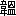

題して
悦楽という、その初めの章に
悦を説き、次の章に
楽を説くことによる。二章の内容、皆
学（学問）を
勧めるものである。二章に次いで
不慍・
無益の二章を記す。その内容も勧学であり。四章の文、言葉づかいに洗練さを欠くといえど趣旨は親切、反復を厭わず、人々を学に
志させようとする。
聖訓に
拠り所を求め、
出所を注記する。これ吾が言葉に
私無くして根拠の有ることを示し、人の疑うこと無く信ずることを欲する為である。
［＃改丁］
人は誰でも
志を立てるものである。身分低く、家貧しく、知恵も
鈍く、気も弱く、
真に仕方のないような者でも、あるいは折に触れ、あるいは胸の底から湧き出して、このままではいけないと奮い立ち、志を立てることが有るものである。しかし
折角志を立てたのは良いが、ただ志を立てたというだけで、学ぶという事をしなければ、心の目指す方向が
定まり気の張りが十分に強くても、何の結果も上げられない。必ず学ぶという段階を
経なくては、志を立てたのは感心だが、あるいはムダに苦しみ、あるいは
倦み疲れ
崩折れ屈し、あるいは脇道に
逸れて入り込み、
終には志をも取り失い悲しい結果を見るものである。英気多く才力
逞しい者などはともすれば自分一人で何事も出来ると思い、他人の後を追わなくとも我
自ら道を開くのに何の困難も無い、何で頭を下げて学ぶ必要が有るかと、我知らず
昂った考えを
抱くことが有る。それは英気の余りの事であれば
咎めるほどの事では無いが、その人に取っては甚だ宜しくない。効果が無いだけでなく過ちの多い事である。
子路は
孔先生（
孔子；中国・春秋時代の思想家、儒学の祖。
氏は孔、
諱は
丘、
字は
仲尼。孔子、
孔夫子、
夫子と尊称される、子や夫子は先生を意味する。）の弟子で気が強く、勇気に満ちた正直
一途の上出来の人であるが、初めて孔先生に
見えた時、先生が子路の武骨であるが美しい性分を見て取って、教え導こうと思い学問の道を勧められたが、子路は
憚り
気もなく、「学問に何の益があるものか、
南山の竹は手を加えなくてもそのままで真直ぐだ、斬ってこれを使えば
犀の革をも通すと聞いている。何が学問だ。」と言いたい放題を申し述べた。子路の思いでは、学問などというものをしても、劣っている人は天性劣っている。賢い人は天性賢い。学問をしても何の益も無い、南山の竹の真直ぐで強いものは、そのまま斬って矢として使えば、厚く強い革さえ通す。何で学問が必要なものか、と思うのだ。その時、お叱りも無く、「
其方は、そう思うかも知れないが、その
素性の良い南山の竹に、
矢筈というものを取りつけて、
矢羽というものをつけ、刃味の良い
鏃というものをつけて、これを研ぎ澄まし、そして
射放てば、矢の入ることも一層深いであろう、どうじゃ。」とお教えになれば、子路は恐れ入って、ナルホド学問をすれば、学問を必要としないほど善い者もますます善くなる。悪くて役に立たない者も、少しは世の役に立つようになるだろうと悟り、それからは孔先生に従って学問に励むようになった『孔子
家語（子路）』。子路と同じような考えを持つ者は世に少なくない。気負って才を
恃む者、頭から学問を馬鹿にし、
稽古（繰り返し習う）という事も、
温故（昔のことを調べる）ということも、何の益が有るものかと思い侮り、俺は人の弟子になるより人の師となる。俺が俺流の
教の先祖となる。と誇り
驕ってジレッタク思い、モドカシク思っている。この様な人の行く末は、仕出かすこと少なくて何も出来ないで終る人が多い。人の優れて恵まれた英気・敏才をムダにすると云うもので、
真に惜しく残念なことである。
さて、
稀に学ぶことを欲しないこともあるが、人は誰しも学ぶことをするものである。
自ら進んで学ぶ者もあり、親などに勧められて学ぶ者もあり、またその学ぶところも様々であるが、それぞれ学ぶには学ぶ方法がある。
折角学んでも、繰り返し、繰り返し、学ぶということをしなければ、学ぶ
醍醐味を知ることが出来ずに、倦怠退屈の気持ちが生じて、
中途で学を捨てることになる。学をするに当たって最も大切で緊要なことは、学をする中に楽しく
悦ばしい境地が有るのを知ることで、修学の中に言うに云えない悦楽が有ることを覚えれば、自然と学に努め業を深めることになるが、学問というものを、
唯これ骨が折れて根気が尽きるだけのことと思うようでは、どれほど志を励まし心に鞭打って、屈せず怠らず行っていても、我知らず弛みも隙も出るものである。そうであれば学問の醍醐味をどうやって覚えるかと云うと、別に変った道が有る訳ではない、ただ誠実に、学んだ事を繰り返し、繰り返して習う時に、自然と得るところが有って、嬉しさ
悦ばしさに人知れず笑みが
催されるのである。学ぶという事は本来、昔の聖人賢者の道を学ぶにしても、何の芸を学ぶにしても、自分の出来ない事を学ぶのである。たとえば舟を
操ることを学ぶようなものである。この様に
早緒という物を船底に取り付け、この様にその早緒を櫓に掛け、この様に
櫓臍を
櫓杭に据えて、この様に櫓を引き、船を右に進める時はこの様に推すことを多くして、左に進める時はこの様に引くことを多くすると教えられて、一ツ一ツこれを受ける。これが即ち学ぶところである。学んで
後に櫓を
執って漕いでみると、簡単には漕げなくて、あるいは櫓臍が
外れて力の入れるところが無く、あるいは押すことを多くしようとしても、却って引くことが多くなって舟はますます左進し、あるいは引くことを多くしようとしても、却って押すことが多くなって舟はますます右進し、心は焦り手は萎え、気は
喘いで
脚竦み、思う様に我が手も
命令を聞かなければ、櫓も従わない。しかしながら、
日々時々繰り返し、繰り返してこれを重ねる時には、少しずつ、少しずつ、思うようになり始めて、六・七メートルの間、十・二十メートル程は、危なげながらも漕げるようになる。その時の
悦びは、人はどうか知らないが、我に取っては寒い部屋に暖かい日の光が差し込んで来たようで、言うに云えない醍醐味を感じる。
尚重ねて櫓を扱うことを習えば、
終には櫓で舟を操るくらいのことは簡単に出来るようになる。自転車に乗れるようになるのも、泳げるようになるのも、その出来るようになった時の悦びは同じである。志を立てたならば
止めてはいけない。志を立てたならば学ぶがよい。学ぶ時は繰り返し繰り返して、嫌気を起こさずにこれを習熟するがよい。習熟すれば
悦びはその中にある。
孔先生は言う、「学んで時に之を
習ねる、
亦説ばしからず
乎」『論語（学而一）』と、ここでの学ぶという語の本意は、雑芸
小技などを学ぶことを指したものでは無い、言うまでも無く先王古聖（儒教の聖人；
堯帝・
舜帝・
禹王・
湯王・文王・武王）の道、即ち日常生活の在り方から、国を治め世の中を平安にするまでの、純正公正な道を言う。「習」は「ならう」とも読むが、「かさねる」と読む方がここではその意味が明らかになる。「
士朝に受業（仕事を受け）し、昼にして
講貫（研修）し、夕にして
習復す」『国語（魯語下）』と見えるのも、「
博く学びて
習ねざるを
患う」『
劉向説苑』とあるのも、「
習坎は
重険なり」『易経（坎為水卦・
彖伝）』と言うのも、
習は皆重ねるという意味である。鳥の
雛がハタハタ、ハタハタと幾度も飛び習うことを習という。習の字に「ならう」という意味と「重ねる」という意味がある
理由である。その字は羽に従い自に従う。羽の下の白は白ではなく自の省字である。しばしば飛ぶことを習と云う。学習の二字が鳥のことに用いられた例は『
礼記』に見えて、『礼記（月令）』季夏之月の
条に、「鷹即ち学習する」とあり、また人のことに学習の二字が用いられた例は、同じ『礼記（月令）』孟春の条に、「この月や
楽正（音楽を司る役人の長）に命じ、入って舞を学習させる」と見える。鷹が
羽搏くのも人が舞うのも、皆
度々行うことによって次第に出来るようになるのである。習の字の味わいを知るべきである。時にというのは、
時々刻々何時と云う事では無く、日にというのは、日々にということと同じである。孔先生の時代の「学」は、今の世の「学」とは異なっていると云えども、聖語はその当てはまるところ重なるところが広く、今の世のいわゆる学芸の学に当てても良く通じて、邪魔するところがない。学に携わる者は、少なくともこの聖語を体験し実感しなければならない。
〇
「
学は
覚ということなり、
未だ知らないところを覚悟するなり」『
自虎通徳論』。この事はこの様にすれば良いと
覚ることも学である、この道理の
本はこうであると知ることも学である、この物はこのようだと
識って、この礼はこのようだと
弁えて、この芸はこのようにして修められる、この道はこのようにして至達できると
覚ることも学である。学は
覚なりという意味に依って言う時は、今まで自分では明らかに出来なかったことが、他の人の
教で明らかになり納得すること、これが即ち学である。また学には
効の意味があって、
和訓では学を「まなぶ」という、「まなぶ」は「まねぶ」の転語で
倣い真似ることで、また「学ぶ」は「
真似履む」ことで、昔の人の高い
徳（道徳：善や正義などの人格能力）を真似て
倣い
履むことであると、
谷川士清（江戸時代の国学者）は説いている。
和訓の意味に
拠る時は、学は先人の言行に
倣って、我もそう有りたいと願い求め、そう成れるように振舞うのが即ちこれである。漢訳和訓、
何れにしても通ずることであるが、しかしながら学だけでは
悦ばしいところには至れない。この事は
正にこのようにすると良いと、我が心の中ではハッキリとしていても、実際にはその事をその様には出来ないのが普通である。また
前賢古聖の
所業に
倣ってこれを
真似履んでも、さて一日も真似られないのが普通である。しかし
時習（時に習う）と云うことの工夫を怠らず、飛べても飛べなくても、ハタハタと羽ばたきを止めない幼鳥の様に、
能くならなくても、能くならなくても、これを能くしようとする時は、幼鳥は
何時しか一メートル飛び、ニメートル飛び、三メートルと飛べるようになって、
終には梢を
遷り渡り、雲にも飛び入ることが、少しずつ少しずつ出来る様になって行く、その光景の
悦ばしさは何とも言えない。これを「
亦説ばしからず
乎（
時習の悦び）」と云うのである。「
説は深くして楽は浅き也」と
 周
周（中国三国時代、蜀の儒学者）は云い、また
訓詁家の「内に在るを
説と言い、外に在るを楽と言う」と云っているのを思えば、「
亦説ばしからず
乎」の説は、我が胸の奥底の花の木に春の日が柔らかく
射し、心の田の開けた
辺りの稲の苗に恵みの雨がしずかに
灌ぐような、平和で
長閑な好光景の
悦びであることが解る。また「
亦説ばしからず
乎」というのは、学ぶ
悦びにはいろいろ有って一ツではなく、その多くの悦びの中で、時に之を習って、自然と疑問が解け、気持ち良く理解できた
悦びも、これも
亦一ツの悦びなので、「
亦説ばしからず
乎」というのである。学び始めは、知らない事を知ることも悦ばしく、聞いたこともない事を聞くことも悦ばしく、また学が次第に進んで、我が世に立ち徳を高める道が、目の前に開けて行くのを見ることも悦ばしい限りである。学びの始めから終わりまで、学ぶ者の多くが経験する悦びは、繰り返し、繰り返し習い、フツフツと次第に湧いてくる悦びである。人の器によって大小深浅はあるが、この悦びを実感できない者は、学んでいると云えども、実際は
未だ学んでいない様なものである。
〇
ある人は問う。学んで時に之を
習ねる時に覚える悦ばしさと、仏教徒のいわゆる
法喜禅悦というものと同じか
否かと、またキリスト教徒のいわゆる精霊が
降るということ、或いは救われる悦びということと同じか否かと。答えて言う、その光景は似ているところも有るが、しかし、孔先生の
教は仏教やキリスト教の
教と同じではない。仏教は父子・夫婦・君臣の道を説いていない。キリスト教は神を尊んで人を
卑しんでいる。仏教は人が人界を超越することを欲し、キリスト教は人が天国に至ることを目指している。孔先生の
教はこの様に人界を抜け出したり、空に昇る様な事では無く、
唯これ人間性を磨いて優れたものにするのである。意味明らかで全て平正で、奇特も無く霊異も無い。それなので、学んで時に之を
習ねる時に覚える悦ばしさも実地の事で、漠然としたものでは無い。「人まさに事の上に就いて工夫を
做すべし、すなわち進境あらん」『王陽明語』、と前人が教えたのも、「我が聖人の道は、捉えどころの無いようなものでは無く、一ツ一ツ実際に
其処に在るものなので、道を遠くに在るように思わないで、只今現在、我が手が触れ我が身に関係する事の上に就いて、道に
適っているかいないかと工夫して見るが良い。そうすれば次第に学は進境する」と説くのである。
王陽明（中国の明代の儒学者）の学風は、仏教の禅家の
教に似たところがあって、「儒教を遠ざかり仏教に近づくこと
程朱（中国、宋の儒学者、
程
、
程頤、
朱熹）にも過ぎる」と言われたほどの人だが、この人をしてこの様な言葉がある。聖人の
教はもとより篤実を主として実地を離れない。
故に王氏と云えども、その言葉は自然とこの様になる。例えば「君子は終食の間（食事の終わるまでの短い間）も
仁（思いやり）に
違うことなし」『論語（理仁五）』。仁に違うことは宜しくない。何で仁に違うものか、今までは考えも無く過ごして来たが、思えば我知らず人に違うことも多かった。これからは是非とも仁に違うことの無いようにしよう。と思い始めるところは、
存心（心を正しく保つ）の道を学んだところである。この様に学んで仁に違わないように願っても、心の癖や気の習いによって数日の
中には幾度となく踏み外し、思わず知らず人に違って、我が心身ながら我が
命令を聴かず統制のとれないこと、まるで馬術の心得無しに馬に乗って馬を
御せないようなもので、仁に違わない境地に居ることは難しいのである。しかしながら仁に違わないように、仁に違わないようにと心掛けて習熟して行くと、
何時しか踏み外すことも少なくなり、昔であれば仁に違うような場合にも、幸いに踏み
堪えて仁に違うことも無く、自ら省みて
悦ばしさを覚えるようなもので、道に進むことも徳を高めることも実地の事である。法喜禅悦はそうでは無くて、一室の中で無念無想の座禅観法に
耽る
中にも生ずる。また精霊の
降るといい救われるというのも、室の中あるいは戸外で神を念じ、祈りを捧げる時に生ずることが多い。二家の
教と儒教との違いを見るべきである。孔先生の
教は、心性を説き示すことも少なくないが、捉えどころも無いような漠然としたことでは無く、
唯々正心誠意の（個人の在り方）から
治国平天下（国の運営）に及ぶ、その中心となるものは、君臣・父子・夫婦・長幼・朋友の関係『書経（舜典）』で、全てこれ人間の事、全てこれ実際の事、全てこれ日々の事、全てこれ平易明白の事、日常茶飯の事である。二家の
教のように高遠な悟りを求める事も無く、厳かな神異を極めるような事も無い。これ
故に孔先生の
教を二家の
教に比べれば、孔先生の
教は低く二家の
教は高い。しかし二家の
教を受ける者で
能く学ばない者は、ともすれば空疎に堕ちて夢を追い、想いを
回らせるような事のみを
善として、実際には何も得るところ無く終わる。その役にも立たない有様は、
智永（中国の陳・隋時代の僧であり書家）が永い年月の間、書道を学んで
終にものに出来なかったことを、
米元章（中国の北宋末の文学者・書家・画家）が
嘲って、「憐れむべし智永、
空臼を研す」『寄薛氏詩』と言ったように、物が入っていない臼をいじりまわして日を送るのに
酷く似ている。仏家の
教を「その高きところ、『大学』に過ぎて
実無し」と
朱子（
朱熹、中国南宋の儒学者。儒教の中興者であり、朱子学を創始）が評したのも、
実無しの二字に無限の力がある。ただし仏家の
教と云えども全く実が無い訳ではないが、孔先生の
教が全てこれ実であるに比べて、仏家の
教は
真に実が無い、キリスト教も高きこと『大学』に過ぎる。『大学』の道はただこれ三綱領（明明徳、親民、止於至善）八条目（格物、致知、誠意、正心、修身、斉家、治国、平天下）に
止まる。「創造論、原罪論、権現論、贖罪論、復活論」『新約聖書』のような幾多の
駭心驚魄（ビックリ）することの有る事も無く、孔先生の
教に対するキリスト教は、孔先生の
教に対する仏教と同様、高過ぎて
実が無い。聖賢の道はそうではない。耕しても、漁をしても、陶器をつくっても、什器をつくっても、商いをしても、皆
能く為し得て
過たないのは、これ聖帝
舜の境地である『史記（五帝本紀）』。
呉か
宋か明らかではないが或る国の
太宰（国王の輔佐）が、孔先生の何事をするにも
能く出来るのに驚き感じて、「
夫子（孔子）は聖者か、何でそんなに多能なのか」『論語（子罕六）』、と言ったような事は、これは孔先生の境地である。多能は孔先生の孔先生たる根拠ではない。
且つ多能は人を率いる根拠にもならない。孔先生は何でも屋ではない。孔先生自身いささか嘆息されて「吾
試られず、
故に芸あり（私は若い頃用いられなかったので、まとまった仕事が無く、いろいろな事をやった。そのため多芸である。）」『論語（子罕七）』、と言われたのを弟子の子貢が聞いただけの事で、これを訳して、「聖人は
尽く会得している。ただし用いられないのは、人が他の小々の技芸を価値あると見るためである。もしそれが用いられれば、即ち大功業が成し出されて、小々の技量の価値を見ることはない」『朱子語録』というのも、
真にそうである。多能・多芸ということで孔先生を評価してはいけない。しかし孔先生は何をしても能く出来て、太宰の目にはその多能が驚くほどだったのであろう。また「舜帝は年齢三十にして
徴庸された」『国語（舜典）』ので、耕・稼・陶・漁等の事を、
暦山・
雷沢・
河浜・
寿邱等で
自らされたのは、その前の若い時と理解する。であるが、暦山に
耕せば、暦山の人々が
畔をゆずり、雷沢に
漁すれば、雷沢の人々が
居をゆずり、陶器をつくれば、器は皆疵や歪みがなかったと伝わっている。考えるに我が聖賢伝来の道は、「正心誠意」『大学』というのも、「忠恕」『論語（里仁十五）』というのも、名付け様によって様々であるが、つまりは人本来の素直で美しいところを以って、素直に美しく物事に応じて行くまでで、仏教のように人を超え、キリスト教のように人を
卑いとするものではない。物事に対処する時々刻々が道であるとするのが、我が孔先生の道である。
どんな時でも
処でも、少しの間でも人は道（本当のところ）を離れてはいけない。耕す時も、漁の時も、陶器をつくる時も、勤めている時も、それだけでなく、家で飲食する時も、外で行動する時も、一挙手、一投足、一
転瞬（またたき）、一
弾指（極めて短い時間）の間にも、
この様にすることが本当であるというものがある。
その本当のところ此れが道である。
その本当のところを確りと詳しく理解することが学である。
またその本当のところを身に着けて、
若しくはその本当のところに身を置き、
叶わなくとも本当のところから離れないで、
努力実行することが時習である。例えば耕す時は、深く鋤き、細かに砕き、
畦を正しくし、土を平らにして、作業は親切を極め、朝から暮れまで働き、終われば
鋤鍬を
丁寧に洗って片付ける。これ即ち耕す者の「本当のところ（道）」である。この「本当のところ（道）」を知らないことを、俗に農業無学というが、農業無学では農作業は出来ない。老農の指導、自己の観察、これらを積み重ねて、耕作は
正にこのようにすると良いと理解できるようになる、即ちこれが「学」である。即ち耕作の「本当のところ（道）」を
能く理解したのである。そしてこの「学」に
拠って、
自ら農業の本道を実践しようと鋤鍬を
執っても、簡単には事が運ばず、日々風に吹かれ日に曝されて、苦労すること月重なり年積もった
後、次第に土も思うようになり、苗も枯れず腐らず、水分も不燥不湿の程良い状態になる。これが即ち「
時習の
悦び」である。これは一ツの例えに過ぎないが、聖賢伝来の
教は稼業の道などで述べ尽くすことが出来ないは勿論であるが、例えて言えば、何時いかなる処にも道が無いということはない。
正心も
誠意も
忠も
恕も、唯これ実地の事で、日常を離れた特殊な事では無い。耕す時は耕す上においてその「本当のところ」を行い、漁の時は漁の上においてその「本当のところ」を行い、陶器をつくる時も、勤める時も、その時のその事の上に「本当で間違いのないところ」を行い、富者は富者で、貧者は貧者で、社会で活躍するにしても、引退して生活するにしても、常にその「本当のところ」を行う、即ちこれが「道」である。この道の意義を理解し、自分のものにするのが即ちこれ「学」で、この学を無駄にしないで努めるもの、即ち学んでそして時習するもの、一から十まで実でないものは無い。孔先生の道はこの様なものである。英霊の資質を持つ者は、耕・漁・工・商皆能く出来て、多能多芸、
太宰を感心させた
舜帝や孔先生のようなことは不思議でも何でもない。
伊尹（中国、殷の宰相）が煮炊きの
小技を
能くしたなどと云う話『呂氏春秋』が伝わるのも、信ずるに足りない伝説だが、自然とそうである様なことである。
故に言う、「万物皆我に備わる
矣（私は完全であろうか）、身に返りて誠にす（反省して正す）、楽しみはこれより大なるは無い、これ吾の本心なり、いわゆる
安宅正路（人として踏み行うべき道）とはこれなり、いわゆる広居・正位・大道（仁の道・正しい在り方・正しい道）とはこれなり、古人これを得、
故にその実あり、理を言えば
則これ実理、事を言えば則これ実事、徳は則実徳、行は則実行」『曽宅之に与える書』と
陸象山（中国・南宋の儒学者、朱子と同時代の人）の言うのも、
真に言い得て過たず、聖賢の道は実の一字を離れない。仏教・キリスト教の道はこれと異なり、
寂滅を説き、現実を超越し、諸行は無常なり、これを
生滅の定めなりとして、人々を現実から脱し
空に就かせようとするもの、これが仏教である。実相を語り中道を説くと云えども、その
教は、世を捨て・愛を断ち・夫婦の道を破り・君臣の義を排除する。正にこれ陸象山のいわゆる「儒は大中（儒教は正）、釈は大偏（仏教は偏っている）」『王順伯に与える書』である。孔先生の道の中正篤実な事に比べることも出来ない。
程子（中国・北宋時代の儒学者、兄が
程・
明道先生、弟が
程頤・
伊川先生）が「仏氏の学（仏教）は、管中より天を
窺う如し、ただ上を見去って四方を見ず（ただ上だけを見て、現実を見ていない）」と云ったのも、仏教の大体を言い得て甚だ優れている。また伊川先生言う、「釈迦は
惟これ生死を理解す。その他は全て理解せず」と、これもまた、仏教の綱領を説き破るものである。仏教には大乗・小乗があって一概に論ずることは難しいが、要するに生死の迷いを離れて
解脱の境地に達することを目的とするのみ、その道は、結局のところ死の為にあって生の為のものでは無い。後世の破戒僧等、あるいは世に
諂い人に
阿り
真を偽り
辞を飾り、仏法もまた実際生活の益を行うと説くが、仏法の本来の趣旨は、「
夫子（孔先生）のいわゆる道なるものは、日用（実際生活）の間を離れない。」と、
楊亀山（中国・北宋末の学者）がいう孔先生の道とは違い、ただ無暗に生死の迷いを離れて、解脱の境地に達する深遠な真理を、指し示すことにある事は争えない。高過ぎて
実が無い。キリスト教もまた仏教と同じで、雄弁に言葉を尽くして、人を啓蒙することが多い。しかしまた実が無い。その
教は、神に
仕える根本の道を主として示し、父母に仕え、君長に仕え・夫に仕え・師に仕える等の道を説かない、「思うに、神は全ての
本なり、善く神に仕える根本の道を尽くせば即ち可なり」と。忽ち人間の
紛云（ゴタゴタ）を脱して、直ちに神の審判に
委せる。堅持する心は
真に高いが、実践の糸口は無いに等しい。世に栄える人が栄誉を
不要物のように捨て去るのは
甚だ良い。神に仕えること以外の事は価値が無いとして、ひたすら我の神に在り神の我に在ることを欲し、思うところただ無暗に天に在って、考えるところが実で無いことは争えない。これ
故に劣る者は
弥陀を奉ずる者のように、優れた者は弥陀を仰ぐ者のように、一神と凡神と相異なると云えど、キリスト教徒と仏教徒の、その道の高過ぎて実が
疎かな事は相似ている。仏教は
空を教え、キリスト教は霊を説く、仏教は
菩提（悟りの境地）を教え、キリスト教は天国を説く、孔先生の道には、このような高遠幽玄なところは無い代わりに、
唯これ平正、唯これ明白、学も
実（実際）、知も実、時に之を習うも実、時に習う悦びも実、工夫も実、修練も実、証得も実、進境も実、絶えて漠然としたところが無い。孔先生の道にも仏教の
禅那（心を静め動揺しない状態）に似たものが無い事も無い。「
食を変じ座を
遷す
斉（ものいみ）の時」『論語（郷党七）』のように、仏徒の入禅と
斉とは同じものでない事は勿論であるが、「散斉七日・至斉三日・淋浴して体を清くして心を明るくし、食を変じて気を潔くし、座を
遷して身心を
易え、雑事を遠ざかり、一念を正す」。似ていると言えば似たところも有る。また聖賢の道にも、西洋の神に仕える様なものが無くは無い。『易経（説卦伝）』・『周頌』・『大雅』・『湯誥』・『商頌』・『微子之命』・『舜典』・『春官大宗伯』・『孝経』・『礼記（王制）』・『湯誓』・『易経（火風鼎）卦』等に見える帝または上帝という言葉が指し示すところは、考えるに「宇宙の主宰者を指すもの」『易経（伝）』でなくてはならない。中国の社会は、
祭祀するもの天神あり、地神あり、人鬼あって、一神教の純粋と異なってはいるが、「
本に
報い始めに返る」『礼記（郊特牲）』思想は天と人とを混淆しながらも明らかに存在し、「文王を明堂に
祀って、もって上帝に配す」『孝経』。などと云うことも有れば、
※祀［＃「示＋（西／土）」、U+798B］燔柴の様な、「
※祀［＃「示＋（西／土）」、U+798B］（浄め祭る）をもって
昊天上帝（儒教における宇宙の最高神）を
祀る」『周礼（春官・大宗伯）』と云うのもある。「
燔柴（柴の上に
玉帛や
生贄などをのせて焼く儀式）をもって天を祭る」『
爾雅』と云うものもあり、およそこれ等の事は、
各国各教に似ているものが有る。特に孔先生の
拠るところの周の
教は、周の前代の殷の時に敬神の
教が甚だ盛んであったので『礼記（表記）』、周の時の人も自然と神を思うこと少なからずあった。しかし孔先生は、
斉を重んじ神を
敬っておられたが、孔先生の道は仏教やキリスト教とは遥かに異なる。キリスト教もまた仏教のように管中より天を窺うようなもので、ただ上だけを見て、現実を見ていない。我が孔先生の道を学ぶのは、山に
上るようなもので、上り努めて止めなければ、一歩は一歩と低所より高所に至り、次第に凡境より佳境に入る。足元を見つめ一歩一歩と全てこれ実地を踏んで、次第に水の濁っていない渓頭を過ぎ、次第に花に塵無き岩頭に至り、次第に雲気ただよう日月晴明の霊域に入る。その道を尋ね、歩みを進める間、何の変わったことも無く、一歩は一歩より高く、
寸進尺登の結果を重ねて徳を積むだけである。山は土石を積んで出来ている。道は歩みを重ねて至る。少しも空疎のところは無い。すべて全く質実である。二氏の学と我が孔先生の学との異なる根本を考えて、二氏の徒の
法喜禅悦、または救われた
悦びなどということと、「時習の悦び」との差を知り、我が孔先生門下の学の、現実を離れず中正明白、切実で人に近く、空疎無実の弊害無く、著しい真益のある事を悦ぶべきである。
〇
時習（学んで時に之を
習ねる）の説、古注は少し異なる。言う、「学に三ツの時あり、一ツは身中の時、二ツは年中の時、三ツは日中の時である。身中の時とは、十才で先生に就いて読み書きと計算を学び、十三才で音楽を学び、詩経を暗誦し、
勺の曲を舞い、十五才で成童となり、
象の曲を舞う」『礼記（内側）』。この様なものがこれである。「年中の時とは、
春秋は教えるのに礼楽をもってし、
冬夏は教えるのに詩書をもってする」『礼記（王制）』ように。「春は『詩経』を
誦唱し、夏は音楽を
奏で、秋は礼儀作法を学び、冬には書を読む様なことである。日中の時とは、君子の学における
修焉（学問を習う）・
蔵焉（習ったものを蓄える）・
息焉（蓄えたものを整理・統合して身につける）・
遊焉（身に着けたものを自在に使用する）」『礼記（学記）』の時がこれである。学ぶ者はこの時において、学ぶところの書物の文と礼学の容儀とを
誦習し、日にその不足のところを知り、月にその優れたところを忘れない。これが悦びの
源である。時習の説をこのように理解しても通じないことではないが、妙味に乏しく浅くて
含蓄が無い。新注の大いに優っていることを覚える。
故に古注をとらない。
〇
学而の章（学びて時に之を習う）の学の一字、読んで覚えると云う意味に理解する者があるが、従ってはいけない。読んで覚えるだけでは学では無い、そうであるなら学もやさしいものである。
程伊川先生の高弟
趙顔予の子
趙仲修が
宣和辛丑の年、
李彦平の落選を慰めて云う、「公は既に論語を知る。では言って呉れ給え、学びて時に之を習うとある何を以って学を為すのか。いわゆる学と言うのは、読んで覚えることでは無い。飾った語句や文章でもない。聖人を学ぶのが根本である。聖人を学ぶには、常時でなくてはいけない。絶え間なく続けることが大切である。日常生活の時も学である、外出遊覧の時も学である、疾病死去の時も学である、これを当然のことと認識して、瞬時に於いても学び、多忙な時にも学ぶ、立てば
則ちその前に居られるのを見、乗り物に在る時は
則ちその中に居られるのを見る。その様にして聖人を学ぶべきである」『
焦氏筆乗』と。この言葉
甚だ
可である。聖人とは心を自在に処理し、事を行うに当たって情理の正当を得る者、聖人を学ぶとは、心を自在に処理し、事を行うにあたって情理の正当を得ようとすること。学の一字を解釈するとこの様になる。即ちこれ解釈して優れ、即ちこれ理解して
実有りというべきである。
〇
学而の章の第一節（学びて時に之を習う、また
説ばしからず
乎）は、その景象から言えば、説（悦）の一字が
棟であり、一節全体を覆い尽くしている。その事相から言えば、習の一字は柱であり、一節全体を支持している。習熟することこれがこの一節の眼目であり、重要なことである。悦び楽しむことこれがこの一節の精神であり、肝心なことである。道より言えば、悦は現象の主体で自然に生まれる感情である。学より言えば、習はこれ物事の
要であり努めて為すべき行為である。学が成るか成らないかは、習と不習とに係っている。これ
故に、未だ聖賢の域に達しない者は、全生命を挙げて習の一字に没頭することを惜しんではならない。であれば、孔先生の門下に在って、才器は必ずしも人に勝ってはいないが、儒教の系統を正しく継いだことで
後人に尊崇されている
曽子のような人も、「吾、日に吾が身を三省する、人の為に
謀って忠ならざるか、朋友と交わって信あらざるか、伝えて習わざるか」『論語（学而四）』と日々
徳の精進に
実工夫を洩らされている。曽子の三省の一条に、「伝えて習わざるか」とあるのは、孔先生が「学びて時に之を習う、
亦説ばしからず
乎」とあるのと表裏をなしている。
彼と
此とを参照して、孔先生門下の学を為す道統を窺い知るが善い。「伝わる」とは、人の得たところのものを我がものとするのが「伝わる」である。「習う」とは、我の出来ない事を出来るようにすることが「習う」である。曽子は自らを治めること誠実適切な人で、伝えて習わざるようなことは無いけれども、それにもかかわらず、日々にその身を省みて、万一にも習わざるような事が有りや否やと、自らを欺くことの無いように
学を為したのである。曽子の心では、既に学び既に伝えられていて、そして習わないようなことが有れば、その身に学んで人に受けたものを無にするだけでなく、その習わないという事が、直ちにこれ一大悪事・一大不徳事・自らを欺くこと・独りを慎まざるのこと・浅ましくも愚かな事であると、深く日々に省察を加えていたのである。曽子がこのように心掛けて学を為した事に照らしても、どんなに「習う」という事が大切であるかを
覚るべきである。孔先生が示された愉悦の光景、曽子が提示した内省の工夫、学を為す者は必ずこれを実践して、そして近きより遠きに至り、低きより高きに上ることを目指すべきである。
〇
陸象山言う、「論語の中、
掴み
処の無い話が多くある、学んで而して時に之を習うと云うもの、時に習うものは何事なのかが分かり難い。学に掴み処が無ければ読みやすくない、掴み処があれば之が分かる。時に之を習うのはこの掴み処を習うのである」『象山語録』と、象山の言葉は指摘をしているが、「時に之を習う」ことを否定してはいない。学んで時に之を習うというもの、何でこれが掴み処の無い話であろう、朱子
嘗て書を作って学者に与えて云う、「陸象山の門に遊ぶ者は実践の士多し」と。これは象山の学が
実を尊ぶからである。また象山
嘗て自ら説く、「千虚は
一実も広めない（虚が幾ら有っても一実も生まれない）、吾が平生の学問、
他無し、ただ
是一実」と、また常にに言う、「道の
外に事無く、事の外に道無し」と、象山の学風はこの様である。即ち知る、象山の門に在っては、学ぶと云うものこれ即ち実、習うと云うものこれ即ち実、道（
教：本当のところ）と云うもの事（事実）を離れず、事と云うもの道を離れず、一から十まで
学でないところは無く、朝から暮れに至るまで
習でないところは無く、
学而時習（学びて時に之を習う）の一語、掴み処の無い話のようで、実際は何処にも掴み処の無い話などは無い。象山が「
学苟もその
本を知れば、
六経（儒学で重んずる中国の易経・書経・詩経・春秋・礼記・楽経の六書）は皆我が
註脚なり（我の心が
学の
本であるとすれば、六経は我心を説明するものである）」と云ったことは、豪語のようで豪語ではない。却って切実真誠の語である。
嗚呼、世の多くの知識人、道は道であって事では無い、事は事であって道では無いとして、学は書斎の辺りにあって、道は日常生活のところには無いとして、「
六経は皆我が註脚なり」と云うのを聞いて、
憚り
気も無く笑って、陸老人（象山）の言葉は人を
欺くと云うが、そもそも、それは誤りである。私は象山氏の学を信奉してはいないが、百千年前の聖賢の教訓を取り来たって、これを骨董としないで、直ちに我が目前の事実として、我が心学の教訓とする象山氏の学は、
恵を将来に贈ること甚だ多いと思わずにはいられない。ましてこのような言葉で人を教える者は、象山氏に限らず漢唐（中国、漢・唐の時代）の
訓詁家と明清（中国、明・清の時代）の考察家を除いては、
周敦頤・程子・朱子・王陽明等、皆
説を
異にして
意を同じくし、
言を立て
訓を垂れて、後生の人が古聖の道を実践体得することを願ったのである。
人は世の中に孤立して永久に孤独で居ることはできない。もし世界が一ツであり、その世界の王であったならば、或いは人中の
至尊となり、永く友は無いであろう。しかし先王古帝の英偉雄俊な者が、その胸中に友として在りはしないか。釈迦が特別に優れた仏教の道を悟り得て、
天上天下唯我独尊と自尊して居ても、
燃灯古仏（釈迦が仏陀になる事を予言した仏）を始めいわゆる過去七仏（釈迦以前の七人の仏陀）は、皆これ同志同心の友ではないか、仇敵の
調達（
提婆達多、釈迦の弟子で、
後に
背く）も天王如来であった時は、これ菩提の善友で薬王菩薩・薬上菩薩・妙音菩薩・観音菩薩・曼珠菩薩・普賢菩薩は元よりの事、遠い
後の世の弥勒菩薩までも、皆互いに主となり師弟となる朋友ではないか『妙法蓮華経意』。法王と称しても友無しでは居られない。「君子独立して
懼れず、世を逃れても
悶る（思い悩む）こと無し」『易経（沢風大過卦・大象伝）』とあるが、それは
一時の事で友無しで済むものでは無い。まして人の全能でない身では、群れを離れ独り住んでも他を頼むことがまた多い。どうして孤独に、頼る者もなく世に背くことが出来よう。人は自然に友の有ることを欲する。これが已み難き人情では無いか。そうでないのであれば、そうでない理由が無くてはならない。
その車を同じくし、その船を同じくし、その路を同じくし、その宿を同じくすれば、人は人と自然に
伴となる。その事を共にし、その業を共にし、その職を共にし、その任を共にすれば、人は人と自然に
侶となる。人の世に在っては、
伴侶は互いに益することが多い。
鄭玄（中国、後漢の儒学者・訓詁学者）は云う、「同門の者を
朋と云い、
志を同じくする者を友と云う」と、師を同じくして教えを受け、願いを同じくして芸を習い、道を同じくして学に従い、志を同じくして徳の向上に努める、このような環境において人は自然と
朋友助け合い、
切磋琢磨して次第に成長を遂げる。
相益（互いの益）の意識無くとも、自然に
相磨し、
糠を取り去り、
純精となる。朋友切磋琢磨して、芸は日に進み、徳は日に成ろうとする。我の人より受け、人の我から受けるものもまた多い。無心に伴侶となるのも、有心に事を共にするのも、皆互いの益となる。朋友有って道を同じくすれば、相益すること甚大、
悦び楽しむべきことである。道の友は、我に於ける旅の道ずれ、事業の伴侶のようなものだけではなく、
正に近くより遠くに及び、一心の小さなものが周囲に広がり、天地の善導を助け、神の徳を讃えようとするもので、道友を得る悦び楽しさは例えようも無い。この意義と光景において、聖賢の道に在る者は、聖賢の道に在る者と相得て喜び、仏陀の道に在る者は、仏陀の道に在る者と相得て喜び、キリストの
教に在る者は、キリストの教に在る者と相得て喜び、手を
相携え、力相助け、ニコニコと相喜び、ホクホクと相悦ぶ。事業を共にする者が相得て喜ぶのも、その悦びは小さくない。情を同じくする者が相得て喜ぶのも、その悦びは浅くない。しかし道を同じくし信じるものを等しくする者が相得て喜ぶことはこれに勝る。昔から異教を奉じ妖神に仕える者等が、ともすれば一団を形成して、王に背き、国を乱だし、世と相争い、敢然として固い誓いの
下に、同心の身を犠牲にするのを見ても、その道友相得る喜びの大にして、相愛し相譲る
念の深いことを知る。道において朋友相得る。実に人生の一楽と云うべきである。
しかしながらこれも
尚云うに足りない。これも
尚旅の道ずれのようなもの、これも
尚事業の伴侶のようなものである。もし我と同じ道を志す人が、我に学ぼうと遠路を苦にせず、我を訪れ、我に
質し、我に問い、我が伝えるものから益を受け、我が得たものが彼を啓発するとすれば、その楽しさは言葉に尽くせない。学んでそして時に之を習い、日に進み、月に
捗り、次第に到達するものがあって、そして我の固く信ずるところがあり、深く実証するところがあり、
看得て徹底し、成し得て通じるところがある。ここにおいて我の悦びを人に推し、我の能くするところを人に教え、また信従する者があって、近くから遠くから集まり来る時は、例えば水が次第に増え、火が次第に盛んになるのを観る様である。我が一意の誠が凝りそしてやがて満ち、満ちて溢れ、付近を浸潤し、遠方へと波及する。我が一心の正が発し、そして香り
薫じ、薫じて暖め、暖めてやがて付近を輝かし、その
灼光は遠方を照らす。その次第に増え次第に盛んになる様子は、実に楽しいものである。そして我が徳が次第に高く、我が道が次第に行われることは、これまた実に楽しい事では無いか。この境地の
消息を孔先生が説明して、「朋あり、遠方より来る、また楽しからず
乎」と云われたのである。
この聖語と似ていて少し異なるが、『易経（兌為沢卦・大象伝）』に言う、「
麗沢は
兌なり、君子以って朋友講習する」と、「兌は
説なり」『易経（兌為沢卦・
彖伝）』と、心に悦びを含む即ちこれが兌である。『易経（兌為沢卦・
象伝）』の言葉で兌の卦を解くと、まず兌は志を同じくする
朋が
相集うことで、内卦の兌と外卦の兌とは志望風格共に相同じ、即ちこれ同志の朋友である。この同志の朋友が共に主人となって、対座しているのが兌の卦である。兌は
沢であって、
両沢相連（二ツの沢が連なる）なる
故に
麗沢という、麗は
連という様なことである。兌は
悦であって、嬉しくてホクホクと悦ぶことである。かの学んで時に之を習い、得るところ有って悦ぶようなことは、正にこれ兌の
象であり、柔らかく優しく精細で若く美しいものは、正にこれ兌の徳である。内卦の兌は主体であり、道に進んで悦び、悦んで道に進み、その誠は溢れて外に現れる。外卦の兌は客体である。その誠に感じてそして遠方よりやって来て、道を共にして志を同じくして、相悦んで共に徳を高め成長を助けようとする。悦びを以って人々を先導すれば、人々その苦労を忘れ、悦んでその困難を克服し、人々はその死を忘れる『易経（兌為沢卦・
彖伝）』というのは、内兌外兌の応接の状態を、適切明白に説明する言葉であるが、これを
君子（学問と徳が備わった人）と人々との間に例えれば、正にこの様である。これを朋友の間に例えれば、実に我は自然に朋を求め、朋は自然に我に来たる。我先ず独り悦び、朋もまた悦び来たる。朋楽しみ来たりて、我もまた楽しむ。古注にも、「朋友集まり合って道義を講習する、相悦ぶこと盛んな
状、これを超えるものはない。」『周易正義』と云う。
およそ学ぶ悦びは、
自得自証（自力で会得）することより悦ばしいことはなく、またその楽しさは、自得自証が次第に積もって、そしてその徳の高さが人に知られるようになり、人がやって来て我に就いて
教を
請い、我が持つ善いところを人に及ぼすより楽しいことはない。まして「朋あり、遠方より来る」のであれば、その近くの者は
本より知れるのである、我が徳の習得が次第に進んで、我に信従する者が多く、学業の効果が次第に現れる。
真に楽しいことである。『易経（雷地豫の卦・九四）』にも、これに近い情状が有り、「
由って
予（楽し）む、大いに得ること有り、疑う
勿れ、
朋盍簪（友相集まる）する」とあるものはこれである。
予もまたゆったりと楽しむすがたである（予楽）。ことに九四の一陽に、五陰が或いは仰いで従い、或いは伏して就くのは、一人の徳の高い者があれば、これより低い者も従い、これより高い者も
就く様なことである。我が人に就くのは我もこれに
由って楽しみ、人が我に
依るのは人もこれに由って楽しむ。火と炭が
相得る様なことで、炭は
未だ火ではないが、火は炭を得ればその勢いは盛んとなる。火は未だ炭には無いが、炭は火を得ればその働きを成し遂げられる。志を同じくする朋が相集まれば、徳の習得に厚薄あり、
器に大小あり、功業に大小あり、学に
成・
未成ありといえども、互いに
相頼り相助けて、共に進み共に盛んになるのである。頼るものも無い孤火はその勢いが盛んでは無く、火と火が相寄って燃えれば、烈々と炎を揚げて光を飛ばす。予の九四の
爻（卦のかたち）は、火が炭の中に在る光景で、衆炭は孤火を奉じ、孤火は衆炭を率いる。「また楽しからず
乎」というのと、
言相（言葉と
相）は表裏をなしている。悦びの意味がある兌の卦に朋友講習（朋友共に学ぶ）があり、予楽の意味がある予の卦に
朋友盍簪（朋友相集まる）があるのに照らしても、聖語に二ツ無く、道情の趣旨を一ツにするのを見るが良い。
〇
「例えば、井戸を掘っている時に、やがて湿った泥を見ることになれば意気上がり、ますます増進を加えて、水を得ようとするものである。また火を起こす時に煙が出て来れば、ますます力を励まして火を得ようとするものである。」『大智度論（巻十五）』という語がある。これは仏教の言葉で、聖学を志す者の為の語ではないが、甚だ巧みに学問の光景を説明している。井戸を掘れば水を得、火を起こせば火を得ることを知って、そして井戸を掘ろうとし、火を起こそうとするところは、これ学に志す初め、既に井戸を掘って火を起こすところは、これ学の途中、湿泥を見て煙を見るところは、これ学が幾分か進歩した
象。努めて已まず、不断に井戸を掘り、休まずに火を起こすところは、これ「時に之を習う」ということである。
終に水を見、火を見るのは、これ「
時習」の結果が成果を得たところである。人有り、来たりて水を求め、我この水を人に分ち与えて、その清涼の味わいを施し、また人有り、来たりて火を求め、我この火を伝え与えて、その温暖の恵みを贈るところは、これ「朋あり遠方より来る、また楽しからず
乎」の光景である。
学而の章に就いて、前節とこの節と、別項の事として看る時はこれ別項の事であるが、一緒の事と看る時はこれ一緒の事、その
中に自然と気脈の貫通するものがあると看る方が優れている。前節はただ学習の事を説明し、この節はただ朋友の事を説明すると看るのでは妙味が無い。
〇
ある人、問いて言う、「朋遠方より来る」ということは、我の善いところが人に聞こえて、志を同じくする者が来て我に就くということで、
真にそうであろう、そうであれば、「また楽しからず
乎」と云うことも、実にそうであると思われる。しかし学に励み道に進む者が習熟成就しても、君子は元より売名をして
自己の徳を示す事は無いので、朋はどのようにして
何某の徳の高いことを知り、そして遠方より来るのか不思議であると。答えて云う、疑いは
真に
尤もである。学に励み道に進めば、必ず朋が遠方より来るという事では無い。朋が遠方より来ることもあるだろう、また自然と来ない事もあるだろう、ただ朋が有って遠方より来れば、
真に楽しい事は勿論である。しかし、学成って徳を積めば必ず朋が遠方より来ると強言することは出来ない。ただ酒が出来れば自然と酒の気は発し、花開けば自然と花の香りは広がる。まして聖人の学は、仏老（釈迦・老子）の学が
空寂清虚を尊ぶのと異なり、全てが皆これ実際のことで、現実離れしたところが無いので、その学が次第に成熟するに従って、日常生活の一挙手一投足の間にも、その徳光・道光は自然と溢れ出し人の認めるところとなるのは、自然な成り行きである。人に知られないということはあり得ない話である。仏者にあって修めるところは、世間の事では無く出世間の事である。努めるところは有為の道では無くて無為の道である。それでも「
戒行（戒律を守る修行）が次第に積もれば、
戒香（戒律を守る功徳）は外に薫じ、
禅定（宗教的集中）の力やや満つれば、
定光（徳の光）は自然に輝く」という。酒気や花香の隠せないように、心の徳は
密であっても、
顕れないで止むものでは無い。孔先生の七十人の弟子は、またこれ孔先生の高い徳を感知して、そして仰ぎ慕ってその門に入ったのである。朋の遠方より来るのも何の怪しむべき事では無い。しかしながら、これは君子が順境の時の事であって、偉大な聖賢も逆境の時に遇えば、苦しみ悩むことを免れない。朋が遠方より来ないどころか、恨み憎み
謗り
誹いられることもある。朋あり遠方より来るなどと云う事は、中々もって有るはずも無く、古来の聖賢の身の上を見ると、或いはその初期に鬱屈し、或いはその中途で挫折し、或はその晩期に険難を免れず、「また楽しからず
乎」の境地に成れないのは明らかである。だとするとこの一節は、学を為し徳を積む人の順境の場合を説き示されたものとして観るべきである。
最も有道有力の人は、独立して
懼れず、世を逃れて思い悩む事も無い心境であれば、また、
時利あらず険難前に在っても、独立孤行することも無く、「大いに悩むことが有っても朋は来る。」『易経（水山蹇の卦・九五）』とあるように、甚だしい逆境の時に在っても朋を得ないことは無い。朋を得、朋を失う事は
易にもその言葉は大変多い。一概にこれを語ることは出来ないが、
諺にさえ、「運去って
佳人に遇い、時至って友を得る」というように、先ず順境好運の時は朋を得ることが有ることを知る。これに反し逆境否運の時は朋を得ることは
覚束ない。
若しそれが無事の境遇で、
平常の運命の時であれば、学を為し徳を積む者の
許には、自然と同志の朋が遠方より来ることが有る道理である。外を論じずに内より論じれば、朋の来る・来ないはたいした事ではない。ただ朋を来させるものが我に有るのは悦ぶべきことで、無いのは悲しむべきことである。しかし内を論じず外を論じれば、朋が来る・来ないに、我の学と徳の足・不足が現れて、その不足を残念に思い、その足るのを楽しめば
善いのである。
元来、『論語』のこの節の本意は、このように
自らが考えて、そして或いは楽しみ、或いは残念に思うというのでは無くて、ただその「朋あり遠方より来る」ということは、例えば春風が大空に渡り、春水が
四沢に満ちる様な光景で、心に沁みるその楽しさは、「また楽しからず
乎」と言われる通りなのである。しかしながら学を為す者に在って、
時習の悦びを体得しなくてはならないのと同様に、
有朋の楽しみもまた
自証（自ら会得）しなくてはならない。以ってこの様に理解してこの様に感ずるのもまた悪くないと思う。
すべて聖人の語、特に我が孔先生の語は、温かく潤いが有って、情が篤く
意が遠大で、論じ尽くし説き去って少しも余すところなく、示して
強いて教えず、勧めて
強いず、志の有る者に、考えそして得、噛みしめてそして味わうように教えられているので、我が心を正し、十二分に思い取り、思い入り、思い拡げ、
尽々と味わい、精しく味わい、細かに味わって、その尽きない妙旨を理解し、尽きない醍醐味を受けるが
善い。程子が「
某十七八より論語を読み、当時すでに文義を
暁っていたが、之を久しく読んで益々その意味の深長なことを覚える。」と云うのも、謝氏が「論語の書、その言葉は身に近く、その指し示すところは遠い、言葉は尽きても指し示すところは究まりが無い、言葉尽きる者は之を訓詁に
索ねるが善い、指し示すところに達しない者は
当に之を理解するためには、全気全心で当たるが善い。」と云うのも、つまり孔先生の
教が、意味深長で含むもの
宏博である為に、澄んだ泉は底が見えても汲んで尽きない様なもので、孔先生の
教に接する者は、先に
己の所見を立てて、そして聖語をこれに
牽き
合わせる様なことをしないで、あくまでも聖語を
玩味咀嚼して、反復してその意義の示すところを推及し拡充するべきである。
碁聖が一石を下ろすのも、その含むところは浅小では無い、碁を学ぶ者がその意中の真処と深処を知らずに済ますのは残念である。孔先生の慈訓に接しても、ウッカリ看過すようなことがあってはいけない。器量小さく才知乏しい者は、思い取って、味わい知ることの出来ない事を、憂えるが善いのである。
「
桃李もの言わねども下おのずから
蹊を成す（桃や
李は何も言わないが、花や実を求めて人が集まるので、その下には自然に道ができる）。」という。「
大蚌は深海に
潜み、
明珠は
堅殻に
蔵れる（大きなドブ貝は深海に潜み、宝玉はその固い殻の中に隠れている）。」と云えども、
蚌に玉が在れば人が獲らないこと無く、「峻山辺境にあり、黄金岩石に包まる」と云えども、山に金が在れば、人が採掘しないことは無い。であれば一芸一能の様なつまらないものでも、人が
真の芸を持つ時は、その人が深く世に埋もれ隠れて居ても、世は自然と之を知り、その芸を世の用に役立たせないではおかない。まして人として学が次第に成り徳が高まれば、世はこれを永く無用の地位に
留めてはおかない。
何時の世、
何処の国と云えども、正しい道に居る徳の高い人の少なさには困っていて、どうか正しい人、
仁ある人を得ようと
希うものである。世は仁人正士を欲し慕い憧れること甚だ深いのである。であれば、学を為し徳に進む者は、ただ
自己の学の
精・
不精と
実・
不実、ただ自己の徳の
確・
不確と
速・
遅を察して、
切に工夫をこらし、地道に精進するのが良いのである。人が我を知る・知らない、世の我を認める・認めないことに無関心に月日を送っても、学が次第に成り徳が次第に向上すれば自然に人にも知られ、世にも認められ、世の為人の為にもなり、天地善導の助けのもなって、我が道は広まり、我が
志も報われる。即ち
学而時習（学んで時に之を習う）の効果が積もって内に充ち外に溢れるようになり、朋も遠方より来て我に就き、次第に我が道は行われ、我が志は伸展するのである
しかしながら夏にも涼しい日が有り、冬にも温かい時が有る。善が用いられ悪が捨てられるのは当然の道理であるが、雲が日を覆い霜が草を圧する様に、君子必ずしも順境ばかりでなく、
大人も否運に遇うのを免れない。
周公（周公旦、中国周王朝の政治家）の
偉さ・孔先生の
聖さを以てしても、流言の為に苦しみ、悪口の為に阻害されたのである。まして徳も及ばず力も及ばない者などが、どうして穏やかで愉快な日々だけを過ごせようか、才能や徳が常人を超える者であっても、人の世は
紛糾し時の勢いは
錯綜するものであってみれば、我が才能が世に知られ、我が徳が世に認められ、用いられ、重んじられることは、なかなか有ることではない。およそ我が人に知られ世に認められない原因は一ツや二ツだけではない。第一には、我が徳が
未だ厚く積もらず、我が才能が未だ広め充たされず、我が学が未だ能く習熟せず、我が力が未だ大にならず、我が芸が未だ精ならず、持つものが不足であれば、人が知り世が認めるところにはならない。第二には、
居るところが
僻遠の地であれば人に知られることもない、第三には、道と時とに合致しなければ知られることはない。僻遠の地で人が少なければ自然と知るところとはならず、乱世では文徳の我は顧みられず、治世にあっては武徳の我は顧みられること少ない。
神異を尊ぶ世では平生の道は浅いとされ、簡易を悦ぶ世では深遠の道に拠れば偽りとされる。第四には、
君子（学問と徳が備わった人）少なく、
小人（人物の小さい人）多い時は、知られることはない。君子は人の美を
助成し徳を信ずる。小人は人の才能を
嫉んで徳を
貶す。君子は寛厚、小人は酷薄。君子は水のようで、小人は油のようである。水の沸騰したものは油を
容れる。油の沸騰したものは水を
容れない。君子志を得れば小人を包容する、小人志を得れば君子に反発して容れず、
剋殺して已まない。
且つ、小人は徒党を組み力を合わせ、
茅の根が
繋がるように同類相結んで、
己の好まない者を排斥することを常とする。その状況は諺に「美女は悪女の
仇」という様なものである。美女は悪女を仇視せず、君子は小人を敵視しない。しかしながら悪女は必ず美女を
嫉み、小人は必ず君子を嫌う。
故にその土地に
偶々君子が少なく小人が多い時は、無責任な批評が真実を乱し、非難が現実を覆って、正しい道に居る、徳の高い人も世に埋もれたまま終わることが無い事ではない。ましてどんな時でも
処でも、君子は少なく小人は多いものなので、学を為した徳の高い者も人に知られることは少なく、人に知られないことは却って多いと云える。第五には、見る目が無いことによって知られない。
伯楽（馬を
相る者）の多くは、ただその白・黄・蒼・黒を知るだけで、
能く
駿馬と
駑馬との違いを知る者は少ない、駿馬と駑馬とを知る者は多いが、能く千里の馬（一日に千里走る馬）を知る者は少ない、人を
相ることは馬を
相るより難しい。また、凡人の凡眼は
和氏璧（宝石）『韓非子（和氏篇十三）』を石とし、


（赤地に白い紋様が入った美しい石）を
玉（宝石）とすることも、当然のこと自然多いことであろう。また、
秦（中国、春秋時代の一国）を滅ぼし、
楚（中国、春秋時代の一国）を滅ぼした
韓信（中国、漢の将軍）は
真に好将軍である。しかしこれを知る者はただ
蕭何（中国、漢の政治家）だけであった。洗濯をする老女から食の恵みを受けたり、心無い人々の
嘲りを受けたりして、永い間、凡人凡眼は韓信を知ることが無かった。また、
苻堅（中国、五胡十六国時代の前秦の第三代君主）は凡主ではなかった。
王猛（苻堅の輔佐の臣）に対座して賢士を他に求め、多く将士を率いて大業を成そうとしたその凡眼で無いことを知るべきである。その賢士を求める心が偽りの無いことも知るべきで、この人にこの心あって、しかも
尚王猛の面前に瞳
穏やかに、苻堅はただこれ善人そのものとして、才華で人を威圧することもなかった。凡人凡眼が人を知ることの出来ないのも已むを得ない定めである。第六には、求める道ますます高く、徳ますます厚ければ、ますます理解されず誤解を招き、人に知られることも無い。
韓娥高歌すれど
和者少なく（韓の女官が大声で歌うが、これに和す者は少ない）、
王莽（中国前漢末、新の皇帝）が慎み深く謙虚なので万人はこれを
称える。和したくとも及ばないので和せないのである。王莽の偽装に
騙されるのも智が足りないからである。「下士は道を聞いて笑う（下級の人々は「道の話」を聞いても理解出来ず笑うだけである）」『老子（四十一章）』と云う。八方美人の偽道徳家は人々に良い人と思われ、真に徳の高い者は薄馬鹿の様に思われるのが世の常である。人が灯火の恩を讃えて、日月の恩を知ることの無い道理で、
小徳浅仁（徳薄く
仁浅い者）は却って讃えられ、
堯帝（中国、伝説上の聖王）のような
大徳至仁は有難く思われないで、「帝力何か我に有らんやと
撃壌歌（尭帝の時、老人が太平を謳歌して、大地を足で踏み鳴らして歌った歌）と歌われる」『十八史略』のを免れず、欲に勝つこと人に超えた釈迦は淫女に
貶され、周（中国、古代の国家）の為に尽力した周公は
二叔（
管叔・
蔡叔の二人の叔父）に苦しまされる『史記（周本紀）』。昔から人より
秀出て群を抜ける者で、誤解を被らない者は殆んどいない。第七には、人は皆我欲を持つ
故に知られない、人は我が児の短所を知ること少なくて、長所を知らないことは無い。他人の児の長所を知ること少なくて、短所を知らないことは無い。人情は自然とこの様である。ここに於いて、或いは郷土に君子が有ってもても、これを好かない者はその長所を見ようともしない。どうして知られることがあろう。また己の好く者に対してはその短所さえ忘れようとする。君子が有ってもどうして蔽われないでいられよう。これ故に人々が
挙ってこれを排斥すれば、君子は捨てられ、変人はこれを珍しいとされ、
偽道徳家は重んじられる。価値は転倒して、評価の言葉は皆多く人の私情に基づく、人の私情は除くことが出来ないので、君子が同時代に知られないことは、どうすることも出来ない定めなのである。
このような情勢の世にあっては、君子が学成り徳が高いと云えども、人に知られないことがある。およそ人情として、人に知られることは悦ばしく、人に知られないことは楽しくない。しかも
志大きく、学を為し道を修めてこれを身につけ、そしてこれを世に行おうとする者に在っては、人に知られないことは心苦しい限りで、悩み苦しむところである。尋常平凡の人々の間では、
自己にそれほどの長所才徳が無くても、それでもなお人の知ることの無い時は恨み嘆くものである。人に親切を尽くして交際しても我が親切を知られず、主人に忠誠を尽くし仕えても我が忠誠を知られず、同僚に比べ早出残業をしても知られず、同僚に比べ
云々の才学、
云々の技能があっても知られず、心やさしく誠実な事も知られず、身を尽くして労苦しても知られず、他を助けること
云々であるのに知られず、他の為に害を除き弊を去っても知られず、およそ自ら思って我に
云々の事が有っても人の知らない時は、人が怨めしく世も味気無く、腹立たしいような心持になるものである。まして人に忠実にして悪く取られ、人に勝っているのに劣った者のように思われ、厚い心を持ちながら情け薄い者のように扱われ、努めて道に従っているのに偽り者のように取られては、不平は変じて憤怒となり、怨嗟は更に遺恨ともなるであろう。しかしながら学が成り徳の高いことが外に知られて、「朋有り遠方より来る」のも、時であり運命である。内に積むこと多いが、外に知られることが無く、或いは用いられず、或いは信じられず、頼るべき友も無く独り孤立し、或いは才能が有っても却って無能とされ、正しくても却って薄徳とされ、悩み苦しみ鬱屈して訴え処が無いのも、時であり運命である。どうすることも出来ない。天の我に味方しないことを憤慨しても、我が天を如何に出来よう、しかし我が
自らを保持して変わることが無ければ、天が我を孤立させ困苦させても、天もまた我を如何に出来よう。「朋有り遠方より来る」、これを楽しむのも、これ君子の事である。「人知らずして
慍らず」、ユッタリ
従容としている、これまた
真に君子の事である。君子の姿は一ツではない。逆境に在って怨嗟することなく
慍らずにあれば、またこれ君子であることを失わない。孔先生言う、「人知らずして
慍らず
亦君子ならず
乎」と。
〇
「
慍は
怒なり」『
鄭玄註』というのは、大雑把な解釈で詳しいものでは無い。慍は怒りが外に現れないものを云う。「慍の字は心に従い、

は仁なり、字は皿を以って
囚（囚人）に食わせる会意（構成）に成る」『
説文』というのが通説で、
は日に従い皿に従う、
※［＃「火＋（而／大）」、U+7157］なりと訓ずるのは方氏の説であるが、思うにこれは非であろう。許氏以来の説（『説文』）と方氏の説と相異なると云えども、字の
に従うものは、すべて、ふくまれ、つつまれ、むくみ、こもり、萌えようとして、
屯するような意味が有ると考えられる。
の字、口に従えば


（
咽び笑い）、
は
咽である、笑っても息が爽やかに通らずに、ウウ、ググ、となるのを云うのである。火に従えば
 火
火（
埋火）の
字となる。
は
鬱煙である、火に炎が
閃き立たないのである。
歹に従えば、
胎敗れる意義の
※［＃「歹＋慍のつくり」、U+6B9F］となり、
に従えば、
瘟疫の
瘟になる。瘟は邪熱が鬱滞することである。女に従えば老女の称の
媼になる。媼は母であるとすれば、単に老婆というよりも、おふくろという感じである。糸が乱れて整わず、スッキリとせず、モヤモヤとするのを

という、「
楊朱（中国戦国時代の思想家）常に
を
衣る」とあるのも、ボロボロの麻綿の衣である。「
砕麻を
とする」と
皇侃（中国、南北朝時代、梁の学者）は「論語」の
疏（解説書）で解説している。
气に従えば、
気
の
になる。気
は網
と同じ、気がモヤモヤと入り組み籠って棚引くのである。
酉に従えば

となる。
九十醸などと云って、
は
醸の字義である。
籍というのも、
醸という様なものである。
籍もまた厚くて薄くない字義で、また
裏蔵の字義がある。オットリして
浅薄でないことを
籍という。
韋に従えば
となる。は納め包むことで、
艸に従がい水に従えば、
薀奥・
秘薀などという
薀の字になる。これも深く納められていることをいう。

は
※［＃「車＋京」、U+8F2C］に対し、※
［＃「車＋京」、U+8F2C］は窓が開いて風通しの良い車、
は布でもって覆われている風通しの悪い車である。水の性質は冷厳であるが、暖かさを含むものを温という。色が温であるというのは、柔らかみ暖かみを含む顔色をいうのである。温柔温和などという言葉や、温良温恭などという言葉などを合わせ考えると、温はムックリと物やわらかに暖かみのあることと知ることができる。手に従えば、
※※［＃「てへん＋慍のつくり」、U+6435］［＃「てへん＋吶のつくり」、U+6290］の
※［＃「てへん＋慍のつくり」、U+6435］となる。※
［＃「てへん＋慍のつくり」、U+6435］※
［＃「てへん＋吶のつくり」、U+6290］は物を水中に押さえることである。温も
※※［＃「てへん＋潯のつくり」、U+648F］［＃「てへん＋慍のつくり」、U+6435］の
※［＃「てへん＋慍のつくり」、U+6435］のように読む。『
礼記』に「温故而知新」とある
温は、手荒く掴み取る様なことをしないで、
品能く押さえ取って
可とすることで、それで「たづぬ」と
訓ませたのである。およそこれ等の
に従う文字の意味合を理解して
慍の字義を咀嚼するがよいであろう。
慍は胸の
裏が涼しくなくて
煩熱を含むことをいうのである。
努火をカッと発するほどではないが、その火の気が籠り包まれていて、モヤモヤと雲が立つように、フツフツと酒が
醸されるように、心中に物が在って鬱滞して、ムカつくのが慍である。憤は心が勢い立って盛り上がるようになることをいう。噴は口の中の物が勢い立って噴き出すことをいう。墳はモグラの挙げた土のように下から膨れあがる土をいう。怒ることを俗に腹立つと云い、こみ上げる事であるが、
憤は胸の中の突っ張りがはじけて、噴水が地を破って噴き出すように、噴火が岩を巻き上げて
噴き
迸るように、止めても止まらない勢い以って盛り上がることをいう。
慍は憤ほど激しくは無いが、やはり同様に心中が穏やかでなくて、ムカムカモヤモヤと不快に
情が鬱することが慍である。憤は心の盛り上がる
状で字を成し、慍は心が
煩悩瘟熱で、盛り上がり溢れ
迸るというほどでは無いが、心中が穏やかで無いことをいうのである。また
怒は
気息亢るの約で、「いかる」ということである。憤は
気息徘徊の約で、「いきどおる」ことをいう、腹が立ち、込み上げて気息（呼吸）が調わない状態である。慍はそこまで強い状態ではない。憤怒などの様な烈しい事では無い。「いかる」にも、「いきどおる」にも相当しない。「うずくむ」と云っても
未だ当たらない。なかなか慍の適切な邦語の
訓は無いが、強いてこれを求めれば、俗にいう「ふくれる」程度の腹立ち加減が
慍に近い。学生言葉の「不平」というのも慍に近い、
自己に学才道徳が有っても人に知られない時は、激しく怒る程の事も無いが、不平の気・忌々しい心・薄腹の立つような思いが生ずるものである。そこを何とも思わずに、心の海に波を立てず、不平の気も起らず、
和やかに涼しく、静かに
治まった
心地で月日を送るとなれば、その人は
真に成徳の君子であって、
今日の言葉にいう「修養十二分な人」であると云えるのである。人に知られなくとも、怒らないことは出来ようが、
慍からないことは中々出来ない。口に出し顔色に露わさないことは出来ようが、心の奥まで朗らかで曇りなく在ることは難しい。「名を成さず、世を
遯れて
悶うるなく、
是とされずして
悶うることなく、楽しめば
則ち之を行い、憂えれば則ち之に
違う、確固として揺るぎない者は
潜龍（世に隠れた偉人）なり」『易経（文言伝）』というのは、自然とこの
不慍の一節と呼応する。世に名を成すこと無く、世と交渉無く孤立して、或いは時に言を発すれども
是とされない、だが
悶えること無く、我が心が楽しければ
則ち之を行い、我が心が憂えるものは則ち之を
違い、確固として揺るがないことは、
真に優れた人格を備えずには出来ない事である。逆境に
居て険難に逢うと云えども、世俗の移り変わりに同じず、動じない心懐、平然とした情志、我は我が守るところを失わず、人の知る・知らないで、誇ることも悩むこともなく、人に知れて我が伸びる時も、「終日
乾々と（一日中努力）して
自ら努めてやまず、夕に
 若
若と（反省）して
懼れ
虔むところあり、人に知られず我屈する時も、悠々として憂えず、我は我が誠を保持して変わらない者、これ真の有道の人なり、君子は礼・仁を以って人に長たるに足り、
嘉会（めでたい集い）を以って礼に合するに足り、物を利して以って義を和するに足り、
貞固を以って事を幹（主幹）するに足る。」『易経（文言伝）』とあることも合わせて考えると善いだろう。礼と仁が
貞固（シッカリ）していれば、人が我を知らなくとも我が心が動くことは無い。「朋あり遠方より来る」のは、我の
真を人が感じるのである。人が我を知らない時は、我の
真の保持に努めるが善い。人の我を知らないことに少しでも不平不満があることは、学を為し徳を積むことにおいて、
未だ一息足りないのである。
我以外の事については暫く触れない。昔の学者は
自己の為にした。日々時々、事々物々、ただ我が当然「こう有るべきこと」、「こう行うべきこと」を考えて行い、行って過ちが無ければ、これ即ち誠があるというものである。この「存誠（誠を保持する）の工夫」に絶え間が無ければ、不平不満の
何時何処に生ずることがあろうか、人知らずしても我の
慍らないことを願って、やっと
僅かに慍らないで済むということでは、君子として
尚僅かながら不足がある。ただただ存誠の工夫を、朝から夕まで、夕より朝まで、休むことなく途絶えることなく、何事においても「こう有るべき」というところを間違えずに、
仁和（柔らかみ）あり
義（正しさ）ある心を常に持てば、自然と少しの不平不満も起らない、正にこれ君子なのである。『荀子（宥坐篇）』に孔先生が
陳国と
蔡国の間で困難に遭われた時の孔先生の語を挙げて、「
 蘭
蘭（紫蘭）は森林に生じても、人が居ないからと云って、薫らないことは無い。君子の学は出世や栄達ために
為すのでは無い。窮しても困らず、憂いて
意衰えないために為すのである。
禍福の全てを知って心惑わないのである。
賢・
不賢は材である、
為・
不為は人である、
遇・
不遇は時である、死生は命である。今その人があってもその時に遇わなければ、賢といえどもそれ
能く行われようか、もしその時に
遇えば何の難しいことがあろう。」と記している。これと同じことを、『韓詩外伝（七）』、『説苑雑言』等に見えるが、外伝には「それ
蘭※［＃「くさかんむり／臣」、U+831E］（紫蘭）は茂林の中、深山の間に生ずる。之を見る人が少ない故に、
芳しくないということは無い」とある。
何れにしてもこの
喩えは甚だ味わいがある。人が見ている・見ていないに関係なく、芳草はその香りを放ち、たとえ深山幽谷に枯れ死するとしても、少しもその気を変えることは無い。人が知る・知らないを論じること無く、君子はその誠を保持する。たとえ困苦不遇で終るにしても怨み
慍ること無く、少しもその徳を変えることが無い。先学諸氏の記すところ疑わしいところ多いが、これは疑うところが無い。実に此処において孔先生の不慍の
訓を観るべしである。
彼の『
猗蘭操』などはこれと異なる。昔から『猗蘭操』は孔先生の作るところとされている。孔先生は諸侯に次々と招かれても、採用されることは少なかった。衛国から魯国に返る道、陰谷の中を過ぎて
 蘭
蘭（香りのある蘭）が独り咲いているのを見て、嘆息して言う、「それ蘭は
当に王者の香りでなくてはならない、今ここに独り衆草に混じり咲いているのは、例えば賢者が時（チャンス）に恵まれずして
鄙夫（卑しい男）と仲間を為すようなものである。」と。そこに車を止めて、琴をとって之をかき鳴らして言う、「習々たる谷風、以って
陰り、以って雨降る、この子（吾；孔子）ここに
帰く、遠く野に送る、
何ぞ彼の蒼天、その所を得せしめざる、九州に逍遥し、
処する所無し（そよそよと吹く谷風によって、陰りやがて雨降る、私はここに帰国の途に就き、遠く故郷を離れた野を行く、なぜ
彼の青空は、その所を得られないのであるか、
彼方此方と逍遥したが、用いられた所は無い）。」と、「世人暗蔽にして、賢者を知らず、年紀
逝邁し、一身は
将に老いんとす。（世の人は愚かなので、賢者を知らない、年月は行き過ぎ、一身は
将に老いようとする）と、
自ら時に逢わないことを
傷み、言葉を
蘭に
擬える」『琴操』と言うと、この様であれば、
慍らずというと云えども、やや
慍るに近い。詩歌の感傷について、過酷に論ずることも無いが、『荀子（宥坐篇）』に載せる
蘭の喩えの、
淑やかで正しいその
妙趣は、
蘭の歌の妙趣に勝るというべきである。潜龍の
象、
幽蘭の
喩えを、深く見極め、能く味わって、不慍の章の尽きない意味を
覚るべきである。
〇
ある人言う、我が次第に人に
勝れば、我は次第に人と異なるなり、我が次第に人と異なれば、人は次第に我を知るようになる。これは自然の道理である。我が次第に人と異なれば、人は次第に我を理解出来なくなる、我が
終に人を超えれば、人は
終に我を理解すること無く終わる。これも自然の道理である。児童の知能では
大人（壮夫）の情を理解できない、壮夫の情は老人の同感を得ることが出来ない。これ
故に人が人に優れて学問を行い、徳を修め、他と異なる見解を懐き、他を超える情感や見識を持つようになると、凡庸の人に理解されないことは無論で、そのため優秀な人が凡人の土地に埋もれることがある。優れた見識を持つ人は世に稀なので、我が人より高い時は、人はどうして我を理解出来よう、我の人に知られないことは我自らが対処するしかない。そもそも
何で
慍ることがあろう。老子言う、「我を知る者稀なれば
則ち我貴し」『老子（第七十章）』。
今日の衆愚が盛んに褒めそやすところのものは、
明日は烈しい非難となる始めである。知られて後に知られなくなるのは、知られずにいて永久に知られないのには及ばない。その鋭利を知られると刀は必ず用いられ、そしてその刃は
毀れる。その力を知られると牛は必ず用いられて、その筋骨は疲れ果てる。「聖人は
褐を着て
玉を
懐にし」『老子（第七十章）』、聖人は外見を衆愚と同じ粗末な
服装でいて、その内を露わさず、輝きを包み隠し、徳を
蔵め隠すことに努める。
韓信（中国、漢の武将）は知られないことを
慍り、逃げて
蕭何（中国、漢の政治家）に知られる。これによって蕭何に捉えられ、功績有る身を殺されたのである。
李斯（中国、秦の宰相）や
商鞅（中国、秦の政治家）や
源義経（源氏の武将、頼朝の弟）や
梶原景時（源氏の武将、頼朝の部下）やは、皆これ鋭利な刀・大力の牛である。知られて用いられ役立たされ、刀
毀れ
筋衰えて、捨てられたのである。昔から、女は
己を愛する者の為に
装い、
士は己を知る者の為に死すと。その知られれば死んで悔い無しとすることの、
嗚呼何と愚かなことか、これ等は召使や家来の道である。自らを重んじる道では無い。これ
故に卑しい人は自らを偉く見せようとするが、高潔な人は却って自らを隠し、実に人の我を知ることを懼れる。評価は外から来て、名誉は他より来る。我を牛や馬と呼んでも、我を見て狂人や愚人としても、我は自然に我である。また何を憂うること有ろうか、人各々自ら保持するところを尊ぶのみ、保持するものあれば何で慍ることがあろうかと。
答えて言う、その言また一理あり、しかしながら不慍の章を解釈して、孔先生の
意、まさにこの様であるという時は只一歩の差であるが、実際は千里の差が有る。我が次第に人に勝れば、人は次第に我を知るのは当然であるが、周公や孔先生の徳の高さを以てしても、
尚人に知られない、その知られないのは、凡常の人にはその偉さが理解出来ないことによる。物大であれば小器は之を容れられない。人が偉大であれば凡夫は之を理解出来ない。これが自然な定めである。世間の状態は実にこのようであり、我を知る者が稀である時我は貴い、どうして憂えることがあろう。しかし、粗末な服を着て、玉のような徳を
懐にして、世に隠れて
自ら
安閑（ノンビリ）としているのは少し行き過ぎである。徳が高いといえども必ずしも正しくない。老子の道はそうであっても、孔先生の道はそうでは無い。孔先生の道とするところは、人に知られる・知られないとによって
悦び或いは
慍ることは無い。しかしながら、自分に得たものが有れば得たものを人に与え、自分に善いものがあれば則ち善いものを人に伝えようと欲する。その
忠恕仁愛には温かい春のようなものがあり、老子が
聡明高達の
一味で、やや冷淡なのとは異なる。老子は善く身を保ち
己を完全にすることを道とし、孔先生は誠を以って人に勧め、徳を以って民を
新にすることを道とする。老子は聡明絶倫であり、孔先生は仁厚徹底であり、
些少の異なりがある。子路かつて孔先生に問いて云う、「ここに人があって、その人が褐（粗末な服）を着て玉を懐いているとしたら、どうですか」と、孔先生答えて言う「国に道が無い時（混乱の時）はそれで
可いだろうが、国に正しい道がある時（平常の時）は正装し世に出て、己の保持する道徳を世に役立てるが良い」『孔子家語（三恕終章）』と。この言葉に拠っても孔先生の道と老子の道との差が分かるというのは軽率だが、老子の
意では、何であれ粗末な服を着て玉を懐くことを優れているとし、孔先生の
意では、世が乱れ、国が無道でどうしようもない時なら是非も無いが、少なくとも国に道あれば、正装して玉を執るべし、飽くまで「褐を着て玉を懐く」にも当たらないと云われたもので、二者の間に差のあることは争えない。
仁慈を説くと云えども老子の道は常にこれを惜しむ。礼儀を重んじると云えども孔先生の道は常にこれ
仁（思いやり）。孔先生の道には、我が生命を差し出しても惜しまないところがあり、身を殺して仁を成すといい、生を捨てて義を取るということ、皆これである。老子にはこの様なところは無い。孔先生の道は、天命に従い、人の
性を尽くし、以って天地自然の優れた働きを
讃えようとする。老子は「天地不仁、万物を以って
芻狗（藁犬）と為す（天地は不仁である、万物を構うこと無く打ち捨てる）」『老子（第五章）』という。老子は天命に明るく、孔先生は情に篤い。「人知らずして慍らず」の
意を解釈して、「我を知る者が稀な時は我貴し、聖人褐を着て玉を懐く」に近い意味に解釈しては、さぞかし孔先生の真意を失い、
情の深い情景を淡泊とするような誤りに陥るものである。孔先生の平生は、ただ人が純粋誠実で人情に
篤いことを欲し給うのである。「人知らずして慍らない」とは、
何と人情に篤い
容子では無いか、これ
故に「また君子ならず
乎」と
称えられたのである。寒冷淡泊・独善自喜の老子一派の
境趣とは、自然と差異が有るのが解るのである。
〇
また言う、「人知らずして慍らず」は、これは慍らないことを欲して、やっと
堪えて慍らない光景では無く、正にこれは、孔先生のいわゆる「人の己を知らざるを患えず、その
能くせざるを患う」『論語（憲問三十二）』の光景である。その中に少しも
昂る態度は無く、全身で
敬い
慎む
意がある。すなわち能く
慍らずを得る。孔先生また言う、「君子能くする無きを
病む、人の己を知らざるを病まざるなり（君子は自分の能力の不足を悩むが、人に認められないことで悩むことはない。）」『論語（衛霊公十八）』と、語意は全く憲問の篇と同じである。さぞかし孔先生の用意存心は、常々この様であったことだろう。このように謙遜し、このように修省する時は、
何処に人知らずを慍るところがあろう。無暗に仏教徒が、
凝然として自ら守り、平然と安心し、漠然と動じないでいるのとは同じでは無い。
羅近渓（中国、明の学者）が
嘗て、人知れずの章を講じて、「君子は人の知ると・知らざるとに心を動かすところ無し」と云えるのを聞いて嘆いていう。「このようであるなら、孔子の
教も飽きられる時も有ろう。これは当然、人の己を知らざるを患えず、求めて知るべきを為すと云えるのと合わせて看るべきである。君子は常に人々と相理解したいとしている。人が未だ己を知らないのであれば、必ず己を反省して知られるに足ることを為すのみ、人のことをどうして慍ろうか。」と云う。近渓の言葉、
真に能く言い得ている。人が己を知らないことを患えないで、己が人に知られるに足るほどに徳を積むことを思うことは、
真に能く「人知らずして
慍らざる」ところである。孔先生の「君子は
諸を
己に求め、小人は
諸を人に求む（君子は何事も自分の事として自分を責めるが、小人は何事も他人のせいにして他人を責める）」『論語（衛霊公二十）』と云えることも合わせ考えると善い。
君子は己を責め、小人は人を責める。人を責める心であれば、人の己を知らないことを
慍らないことは無く、ただ能く己を責めて人を責めなければ、
諸を己に求めて忙しく、人の己を知らないことを
慍る
暇が無い。己の誠を人が疑い、己が人の為を計って忠実を尽くしても人はこれを知らず、己が志を励まして善を為しても人はこれを信じず、己が苦しみ堪えて道理を守り通しているのを、人がこれを察せずにいる時には、初めから人に知られたいというような卑しい汚い心がある訳ではないが、自然と不平不快の思いが
萌えて、薄腹も立ち、口惜しくも思われ、味気無くにもなって、いわゆる
慍るという心情になるもので、なぜ人は我を知らないのかと
忌々しいものだが、これ即ち己の器が小さく徳が薄いために、
不知不識に人を責めるようになるのである。もしそれが、その心に任せて人を責めて止まなければ、全く小人の境地に堕ち入って、初めには少しはあった善意も忽ち地に落ちて無に帰してしまう。従って次第に不安・動揺から
怨嗟・
恨恚・
娼疾・
羨望・
覬
（身分不相応な願い）・
狠戻（ひねくれ）等の種々の悪徳の発生を見るようになる恐れがあり、人を責めるのと己を責めるのと、初めは僅かの差であっても、
終には大きな隔たりをもたらす。凡庸の人々の道理を
弁えない者は、たまたま善意で事を行い結果が出ると、これが人に知られることを欲するが、これを人が知って呉れないと、直ちに人の無理解を責め、同情が無い、能く観て呉れていない等と責め、不満で心が塞ぎ楽しまず、気が塞いでムカムカし、
慍るのが常である。悪人として憎み排斥するほどでは無いが、
小器薄徳の者（人物が小さく道徳の薄い者）が「人知らずして、
慍らない」ことは稀である。たとえば詩を作り画をつくるような小技の上においても、良いものが出来れば、凡人の情として早く人に知られることを欲し、たまたま
佳い詩である、好い絵画であると称賛する者があれば、ニコニコとして得意漫然となるが、好いとも悪いとも評価されず、或いは
拙い詩である下手な絵画であるなどと
貶す者がいて、人の我を知らないことを見る時は、忽ち
慍りを懐いて不快の思いを感じ、口にこそ出さないが、彼なんぞに詩が解るか、彼なんぞに画がわかるか、彼はものの観方を知らないなどと、心中で人を責め、甚だしいのは顔にも口にも現わして人を責める。これが小器薄徳の者の常である。
我
真に人を愛して人我に親しまず、人を
治めてしかも治まらないようなことを、結果が出ないという。
行って結果が出ないことは、我に徳が有っても人がこれを知らないことで、
何れも凡人の心情では
悶々として堪えられないことである。であるが、人親しまず治まらない時に己を反省して、「我の人を愛すること
未だ深からず、未だ広からず、未だ至らない
故の結果である」と思って、我が愛の
能く深く・能く広く・能く至ることを欲し、我が行いの道の最善を尽くして能く至り及ぶことを求めることを、「
反求の工夫」という。「
行って得ざる有れば、
返って
諸を求む」『孟子』と云うのもこの事である。「人知らずして
慍らず」という裏面に、
反求精進の工夫があってこそ、正に真の正気・活気・新鮮な気の張り・尽きせぬ妙味が有るのである。
若しそうでなく、ただ漠然として心を動かさず
安閑（ノンビリ）としているのであれば、それは老仏（老子・釈迦）の徒の為すところに近い。
恬淡・
寂静としたところは、愛すべく悦ぶべきことであるが、生気は戻らず、困難を克服して、伸び伸びと成長するには不足があると云わざるを得ない。
范純仁（中国、北宋の政治家）が
経筵の進講（国王への経書の講義の席）で、この不慍の章を説明して言う、これ即ち、「小人が
汝を怨み・汝を罵るといえば、則ち大いに徳を
敬む」『書経（無逸第十九）』という意味であると。范氏の言葉、
真に説き得て徹底している。周公は成王に教えて、殷の中宗・高宗・祖甲と周の文王が民人に臨んだ用意と実行を説明して云う、「この四王は皆
有徳有道の君主であった。民人が
己を
罵っていると聞けば、則ち大いに
自ら徳を
敬み（大切にして）、ますます奮って善政を
修め、少しも己を是とし民人を責める
意が無い、民人の言葉が誤ったものであっても誤りと責めず、その誤りをさせたのは我が徳が足りない故であって、これ
朕の誤りなりとして、罪を己に帰して少しも怒りを含むことが無く、また
真に怨み罵る者が有れば、普通の人情では怒って人を罪するところであるが、
妄りに怒らないのみならずこれを聞いて、それにより己の徳行・政治の得失の状態を自覚して、より善美を尽くす事を欲し、ニコニコと明るい心で
慍らず
嫉まず、物事を進め治めて、鬱し滞ることが無かった。」と、不慍の章の意味、
実に無逸のこの章の意味と、意味相通じて光景互いに映じ合うものがある。
范氏が周公の
訓を取り出して来て、孔先生のこの言葉を訳したのも、
能く本質を理解していて誤るところが無い。羅氏の言と范氏の説は、言葉は違えども意味は同じである。このように能く理解されて、「人知らずして
慍らず」の聖訓は、
活き活きと躍動して、全面目・真精神を我々の前に現わすのである。ユメユメ漫然と見過して、老仏（老子・釈迦）の徒の
恬淡寂静の境地と似ていると誤解してはいけない。
〇
「人知らず」の人の字を解釈して、これを上位の権力者であると理解する者がいる。そうであるかも知れないが、必ずしもそうとする必要はない。
己以外のもの皆これ人である。必ずしもこの章の指す人を、これ君主である役人であると狭く考える必要はない。孔先生の
情は志ある人が「知られず」にいて、しかも「
慍らない」ことを称揚し言外に之を勧められるのである。孔先生の、人がこの様になることを望まれる思いは、「また君子ならず
乎」の言葉の気迫を察すれば納得できるのである。
〇
慍の字の
義と
象が明らかでなければ、この章の
情意がハッキリしないので、
些か慍の字の用いられた例を挙げて、人の理解の徹底を図りたい。「衛霊公、
陳を孔子に問う。孔子答えて
曰く、
俎豆の事は
則ち
嘗て之を聞けり、
軍旅の事は
未だ学ばずなり、
明日遂に行き給う。陳に在りて
糧を
絶つ、従える者病みて、
能く
興きること無し。子路
慍りて
見えて曰く、君子もまた窮する有るかと、子曰く、君子は
固より窮す、
小人は窮すればここに
濫す（衛霊公、軍の陣立てを孔子に問う。孔子答えて言う、祭事の事は聞いて知っていますが、軍事の事は未だ学んでいません。と断って、翌日に衛を去った。陳国での旅中に在って食料が絶え、従える者達は病んで起き上がることも出来ない。子路が
苛立って孔先生に向って云う、君子もまた困窮することが有るかと、孔先生言う、君子も当然困窮する、小人は困窮すればここに乱れるが、君子にはそういうところは無い）。」『論語（衛霊公一）』と。ここに
慍というのは、子路の
意では、君子が糧食を絶して困窮するようなことは、有ってはならないことだと思うのに、今皆が飢えて起きることも出来ないことを見て、心中苛立って「学ぶや、
禄その中に在り（学べば、食も自然と得られる）」『論語（衛霊公三十一）』と聞く、であるのに、今の困窮はどうした事ですか、「およそ人の善を為す者は、天報いるに
福を以ってし、不善を為す者は、天報いるに
禍を以ってす、今
夫子徳行を積み善を為して久しい」『
説苑（雑言）』、であるのに、このような難儀に逢うのは面白くない
状態だと言った例や、舜が五弦の琴を弾いて歌った詩に、「南風の薫ずる、以って吾が民の
慍りを解くべし」『礼記（楽記・南風歌）』とある慍は、次第に暖かくなる頃は人の心はまだ縮こまっている、それが「南（生育の里）」『孔子家語（弁楽解）』の方から
颯然と快い風が吹いて来ると、心も
爽やかに、気も伸び伸びと身も
裕に
寛ぐ様になるという例や、「
憂心悄々、
羣小に
慍る」『詩経（栢舟）』とあるのも、小人が群れを成して、口には出さないが怒りを含むことを憂えるのである。君子が出世をすると小人は慍るものである。およそこれ等のところに用いられた
慍の字を味わって、腹の中に不満がたまり、胸の内が爽やかでなく滞る
状態が、
慍るであると理解し
覚るが善い。
人の幼い時は特に言う事も無い。竹馬や木刀で遊び戯れて、日を過ごすだけである。それが次第に成長して書物を読むようになり、字を書くようになる。初めは書物を読んでも
素読（文意も解らずただ声を出して読む）、字を書いても手本を書き写すだけのものである。それが、身体が大きくなり心が発達して成人となると、意欲が出て、智慮も盛んになって来る。ここにおいて、或いは有名になりたいと思い、或いは成功したいと願い、或いは金持ちになることを求め、或いは技能の達人を
希い、これ以下の者は、飲み食いの欲や男女の情を満たすことを祈る。凡庸の資質で教育の無い者は、ヤギやウサギのようにただ食欲・色欲を思うだけなので、これも言う事は無い。資質がこれ等より上で、聡明英敏と云うほどでは無くとも、考え深く観察に
長けている者は、早い者では二十才前から、遅い者でも三十才・四十才には、「思う（考える）」ことが無くてはならない。昔から人は、皆「思う（考える）」ことがあるのである。これ故に、「人とは如何なるものであるか」との問いに対して、「人とは物思うものである」と答えるのも間違いではない。
純理の思索に沈むと、理路は深遠に達してほの暗くなりぼやけてける。
真情の行く末を探れば、情の海は広々と果てしなく、
水面は遠く暗みに入り見えなくなる。金鉄を貫き岩をも透す精神力、山を抜き世を
蓋う意気込みで、威力を天地に及ぼし、功業を造物主と争おうとしても、人の意図の及ぶところ、井の中のカエル・
甕の中のアリと同様なのをどうすることも出来ない。
仰いで天を望めば月は
運り星は
列なる、
俯いて地を観れば山は
峙ち川は流れている。天地は
永遠、人はこの
間に立って、
蜉蝣の命を以って、
蟷螂（カマキリ）の
臂を張ろうとする
乎、
嗚呼また哀しみ憐れむのみである。堯・舜以前は世も遠く知ることが出来ない。今より
後も時は永く知ることが出来ない。人はこの
間に在って、大海に浮かぶ
粟の一粒のように存在する。嗚呼また
悼み
弔うのみである。
且つそれ、天地はどのような状態で始まりどのような状態で終わるのか、人間は
何処から来て何処へ去るのか、我は何に由って生まれ何に帰して死ぬのか、目を挙げて看れば、
紅花・
青草・
白葦・
黄茅は走馬灯のように、心を凝らして思えば、恩寵・屈辱・栄光・衰退・悪口・称賛・成功・失敗はクルクルと無限に廻る水車のように循環する。我がこの世に在って、そもそも何を
為して何を求めれば良いのか、思い此処に至れば人は茫然として自失するしかない。
若しそれ順境に我が意を得て、世の憂きも人の
無情も知らず、空に
漂う雲のように日を送る者は、或いは何も思うことが無いかも知れないが、そのような人でも、一旦、何かの折に触れて発憤し、我が身を省みる時には、或いは突如として深い思いに入り、或いは
愴然として永い憂いに沈む。まして早くから人間に揉まれて世間の艱難を味わう者は自然と気持ちや感情に影響を受け、どうすることも出来ない煩悶に陥るものである。人物に利鈍があり大小があり、知識に深浅があり広狭があり、境遇に順逆があれば、人々の思うところも一ツでは無く、
幽邃もあり卑近もありドライな理もありウェットな情もあり様々であるが、各々その性質・状態が違ってもその思うことは皆一ツである。ここにおいて或いは世を嫌い
心中に絶えず悲しみを
湛え、或いは人を憎んで
腹中に怒りの波を立て、或いは世の中を侘しく思い、神の憐れみを欲し、或いは渡世の苦を脱して極楽浄土の
清々しい境地を
希い、或いは反対に正道を捨て欲に走り魔王の力を持とうと惑い、或いは敢えて外よりも内を重んじ酒飲みの名に甘んじ、或いは礼儀作法を無視して自由気ままとなり、或いは因果を断ち切り道理を超越し、神や仏に捉われず思いのままに任せ、或いは身を苦しめて神や仏の貴い言葉を守り、智を捨て秘儀に従おうとする。甚だしく愚かな者は邪教や脇道・枝道に入り、最も狂った者は自殺してしまう。昔は疑惑を抱くといい、今は煩悶に苦しむというのも、皆この境地にあることを云うので、人間多少の差はあっても、このような悩みを味わらない者は稀である。
さて人が
若しこの境地に陥ると、ネズミが
甕に堕ちフナが釣針に掛ったようなもので、脱しようとしても脱せず、忘れようとして忘れられず、様々に思い悩み手段を尽くし悩み苦しんでも、さてどうすることも出来ない。寝ては夢見も悪く、覚めては心爽やかでなく、物も手につかず、身も心もフラフラと、右に考え左に求め、ソレかと疑いコレかと迷い、迷いの闇に力無く信も無く
彷徨ような気持になり、気も腐り筋力も萎えて、殆んど自失の状態となる。その時の当人の胸の内は、赤ん坊が苦しんでも言葉に出せないように、苦しみの原因を人に訴えることも出来ずに、苦しみの上に苦しみがあり、
悶えの中に悶えがあり、鋭い刃物で腹を裂き、臓物を洗うようなことでも敢えてしなければ、この身の黒いモヤモヤは無くならないような圧迫を感じる。これ
故に人はここに於いて身悶えして已まず、各自の持つ知力の有る限りを尽くして血路を開こうと
図る。実に哲学もここより起こり、宗教もここより起こり、また哲学もここに返り、宗教もここに対するものであれば、この境地はこれ日常茶飯の閑境に無く、これ山間や水郷の平安な地でも無い。
真に人道の十字路・三叉路の分岐である。しかしながら非凡の英才もここに至って智は窮し、抜群の偉才もここに至って力尽き、手を
拱いて嘆き、目を
瞠り吐息を
衝く。古来賢哲の伝記が歴然とこれを例証している。
それにも関わらず、平凡な才能を抱き、浅小の器を持つ者が、その学問は密でなく深くなく、その知識は精でなく遠くなく、その思惟考察し得るところは分かり切ったものでしか無いのに、敢然として自ら問題を解こうとする。これはまるでアリが
大樹を動かそうとし、子供が
巨岩を除こうとするようなことで、その
能く出来ないことはいうまでも無い。イヌやタヌキを扱えないのに、トラやヒョウを扱えると言っても、誰がこれを信じよう。溝川を渡ることも出来ないのに、江海を渡ることが出来ると言っても、誰がこれを信じよう。論理の道筋を知らず、数理のかみ合わせを探らず、生理の知見を欠き、物理の知識に乏しく、哲理も教理も
未だその入り口を窺うにも足りない分際で、出来もしない大問題を解決しようとする。これでは溝川を渡ることも出来ないのに江海を渡ろうとし、イヌやタヌキを扱えないのに、トラやヒョウを扱おうとするようなことである。その
能く出来ないことは論ずるまでも無い。であるのに、世の人はこの分かりやすい理屈に暗く、乏しい知識経験を
本にした
自己の力だけで
自己の煩悶を解決しようとする者が多い。その自らを
貴ぶことは可であるが、その自負心は過ぎてはいないか、その
自己の力だけを用い過ぎて、他から学ぶことをしないのは、分からず屋の行為では無いか、このような人の云うところを聞くと、言う、「今までの言葉や古い
訓は納得できない。経典や書籍は、我が疑いを解くに足りない。学者や牧師や僧侶は、我を啓蒙し迷いを解消するに足りない。我自ら生命の
源に
遡って、天地の
奥義を明らかにする」と、そして刻苦して疲れを忘れ、朝から晩まで、夜から夜明けまで、或いは食わず、或いは眠らず、或いは仕事もせず勤めも執らず、或いは親に仕える事を怠り、妻を省みることも無くなる。その心もまた悲しいことである。しかしながら、そのように励んでも益は無いのである。
孔先生言う、「吾
嘗て
終日食わず、終夜
寝ねず、以って思う。益無し。学ぶに如かず。」『論語（衛霊公三十）』と、孔先生の優れた知恵や人徳を以って、
不寝・
不食の苦恩を積んでも、「自ら省みて益無し」と言われるのに、凡庸の分際で、少しばかりの苦労を敢えてして、その功益の有ることを欲しても、それ何の道理が有って功を遂げ益を得られよう。人は皆自らを高いとし、自らを大なりとする人情を免れないが、気を落ち着けて虚心に、自分と孔先生と、どちらがその才能が高く、どちらがその
志が大なるかを考え、そして孔先生でさえ「
自ら省みて益無し」と言われるのに、我がそもそも何ほどの益を得られるかと気づかなくてはいけない。思うことが悪いのではない。無暗に思っても益は無いのである。思うことが益無しでは無く、思って学ばないことが宜しく無いのである。孔先生のこの言葉、親切は骨に徹して、孔先生が常日頃の実体験を説いて少しも隠すことなく、後進の者が自分と同じ過ちをしないようにと、「益無し」と断じて、「学ぶに
如かず」と勧められたのである。「これ、思いて学ばざる者の為に之を云い給えるなり」と朱子が云うのは当然その通りで、孔先生が
真に「思いて学ばない者」を憐れまれる余りに、自分の往時の打ち明け話を
為されて、「思うは
可、ただ、
只管に学ぶべし」と
諭されたのである。孔先生は「思いて学ばない者」では無い。「特に語を垂れて以って人を教えるのみ」と朱子の言えるのは、孔先生を尊んでいるようであるが、却って優れていない。思うにこれは「特に語を垂れて以って人を教え給える」のでは無く、孔先生もまた、実際に発憤して、食を忘れ、終日終夜、一生懸命、思いの限りを思い尽くしたことがあって、その実際を語られたのである。であるからこそ、
張横渠（中国、北宋時代の儒学者）もこの事情を知って、「孔子
甚だ辛苦を喫し来る」と云うのである。最も孔先生の思われたことは何であるか、明らかに知ることは出来ないが、孔先生の思われたところの事と、今の世の青年等が悩み苦しんで思うところの事とは、これ一ツにして異ならずと云えば、それは孔先生を偽り、今の青年等を偽るものである。孔先生の思われたところの事は、今の世の青年等の思うところの事と、必ずこれ異にして同じでないと云えば、これまた孔先生を偽り、併せて今の青年等を偽るものである。ただし、孔先生の思われた事も明らかでなく、今の人の思うところも
区々で一ツではないが、何れにしてもその「思う」は同じ「思う」で、そしてその学ばずして我が「思い（考え）」を師とし、
教に頼らないで自らを用いることの益の無いことは同じく益の無いことであれば、その異処より論じず、その同処より論じて、「益なし、学ぶに如かず」の聖訓を大切にしたいのである。
今の人等が
自ら
苦思して学ばない原因は、書物を読んでも師に質問しても、書物に載っているところが我が思うところの題目に触れず、師の答えるところが我が問いの心髄に
中らず、いわゆる痒いところに手が届かない感じがあって、自然と昔の考えや
教に依ることをしないで、自分の思うようなことを昔の人は思った筈も無いとして、この様な痛切甚深な思いを懐くのは自分だけだと考え、
自ら「思いて学ばない（自分の乏しい知見をもとに考えるだけで、先人の
教に学ばない）」のであるが、しかしこれは甚だ道理の無いことである。実にどんな書物を読み、どんな人に質問しても、的確に我が胸中の疑いを解くような言葉に接することは無く、
教に逢うことも無ければ、
若しその真を極論する時は、
大人・
哲人の広く深い問いなどならいざ知らず、
鈍根・
浅薄な凡人達の問うほどの事、思うほどの事を、解けない経典が有る
筈も無く、説明できない師が在る筈も無い。自分が初めて遇った事は、初めて起こった事のように思われるが、事は
以前から在ることで、自分が最近初めて遇っただけの事である。東北に旅して初めて松島を見た人には松島は珍しい景色であるが、松島は昨日今日湧き出たものでなく、昔から在るのである。男女が次第に成長して恋ということを覚えると、初めて幽玄不可思議な情緒の存在に気付くけれども、恋は三千年・五千年、
乃至原人の昔から存在するのである。これと同じで、人間の
真致（本当のところ）、世界の
帰趨（行き着くところ）などという第一義問題、または第一義問題に関連した問題、またはこれよりも低く、しかもこれに近い問題などに、思いを懸け心を向ければ、その人には今まで覚えた事も無い大問題としてヒシヒシと身に迫ってくるであろうが、その問題は今初めて世に起こったものでは無く、遠い昔から在るのである。であれば、自分こそ痛切甚深な思いに悩む者と思っても、それくらいの思いを懐いた人は、昔から今に至る間にどれほど居たことか、その人の思うほどの思いは、磯打つ波が日々に繰り返し繰り返して打つように、珍しくも無く世に同じことが繰り返されているのである。ただ
処が異なり、時が異なり、人が異なれば、全く同じと云う事も無いが、だからと云って全く新しいことも有る筈は無い。ここに
譬を以って云えば、例えば人が在って、自分の家に前々から根深く関係し、また今後も末永い関係が続く金銭の貸借出入りが、大変複雑である事に心づき、その
本末を知るために清算をしようとするようなことである。その清算の結果を得ようとしても、事情は紛糾し計算は煩雑で、手のつけようも無く、糸口を得ようといろいろの簿記法や参考書の類を
繙いて、当面の問題を解決するためのものを求めても、
終に適当なものが得られず、市販されている多くの簿記法や参考書の類では役に立たないとして、新たに簿記法や計算法を新案しようとしても、その
意は立派でその苦心は誠でも、その結果はどうであろうか。さぞかし解決は難しい事であろう。出納の事情は千種万様であれば、いかなる簿記法を調べても、完璧に我が家の事情に合致した簿記法の書が有る筈もなく、また計算の数量も千差万別なので、どのような計算法の書を繙いても完璧に我が家が持つ問題と同じ問題を解く計算法を記載した計算法の書が有る筈もない。これと同じでどのような経典書籍を読み、どのような
高僧碩学に遇っても、経典書籍の記載するところが我が当面の疑問に一致し、高僧碩学の教えるところが我が目前の煩悶に適当して、直ちに我を啓蒙して迷いを払うということが有る筈も無い。しかしながら簿記法も計算法も、皆人生の事実を基礎とし、社会の経験を柱として出来ているので、簿記法を能く学べば、どのような事情も自力で書ける方法は有るだろう。また計算法を能く学べば、どのような計算も自然と出来るだろう。即ち我が当面の事情と同じような事情に対する解決は、どの書の中にも
何人の
教の
中にも在るに相違ない、学んで学び得れば、凡常の人が提出するような問題を解決するには有り余るほどの知識が、簿記・計算の書と教える師には備わっていて不足は無いのである。百七十八と二百四十五を合わせて幾ツになるかという問題があるとすると、広く算数の書を読んでも、百七十八と二百四十五を合わせて幾ツという問題が載っている書は中々無いが、加算の方法が記載していない書は無いので、能く加算法を学べば簡単にその答えは得られるのである。これと同じで、普通の人が、我一人が大きな疑問を懐き、深い迷いに
陥ったような
心地になり、我が胸中の一大煩悶を解く書が無い、これを
啓く師は無いと思うのは馬鹿げた事で、例えば、算数の書を読んで百七十八と二百四十五を合わせて幾ツという問題が載っていないという様なものであって、
真に愚かな事である。
昔から今に至るまで、天は覆い・地は載せて、石は
凝り・水は流れる、人間に何の
異なるところは無く、変ったところも無い。我と百千年前の人と、我と万億の人と、全く同じであるとは云えないけれども、同様なものをもって存在するものであってみれば。我が思うほどのことは昔の人もまた
嘗て思い、我が疑うほどのことは他の人もまた嘗て疑ったことである。であれば、不世出の偉器大才ならばいざ知らず、大抵の人のアレやコレやの物思いに答えるほどのことは、少なくとも経典と名が付き、師匠と世の呼ぶほどの者がよく出来ないと云うことが有る筈が無い。つまりは学ぶことの不徹底・不親切が、経典書籍の中に明白な答えがあっても之を捉えることが出来ず、無暗に書籍を
漁り文章の闇に光を当て探し求めるのである。照らす光はあってもどれ程のものがあろう。求める思いは切実であっても得るところにどれ程のものがあろう。
孔先生また言う、「吾嘗て終日思う、
須臾の学ぶところに如かず、吾
嘗て
跂ちて之を望む、高きに
升りて
博く見るには如かざるなり。高き升りて招くは、
臂の長きに
非ざるなり、而れども見る者は遠し、風に
順いて呼べば、声の
疾を加えるには
非ざるなり、而れども聞く者著らかにして、車馬を
仮る者は、足に利あるに
非ざるなり、而れども千里を致す。
舟
を
仮る者は、水を
能くするに
非ざるなり。而れども江海を
絶る。君子の性の異なるにあらざるなり、而れども善く者に
仮るなり（私は以前一日中考えたが、寸時を惜しんで学ぶしかないと悟った。私は以前つま先立ちで遠くを見たが、高いところに昇って見るのには及ばないことが分かった。高い所に昇って招くのは
臂の長さに拠るものでは無い、高い所に居るので遠から見える。風に
順って呼べば声に速さが加わるということは無い、しかしながら声は明らかになる。車馬を借りる者は、足が速くなるわけではない、しかしながら千里を走る。舟の櫂を借りる者は、水が得意になる訳ではない、しかしながら江海を渡る。君子の性質も常人と異なる訳ではない、しかしながら善い者の力を借りるのである。）」『大戴礼記（勧学篇）』と、
真に孔先生の言う通りである。人が学ばないで
自ら思うことは、その
意は善しと云えども、その望みはまた遠いことを知るべきである。孔先生の英才を以ってしても、学ばなければ遠くに至らないのである。子供が爪先立って望むようなことである。その見える範囲の狭苦しいことを知るべきではないか。
しかしながら人の常情として、古い
教に頭を下げることを好まず、車を前車に随わすことを悦ばず、才能も
拙く智慧も浅いにもかかわらず、我自ら独自のことを為そう欲し、
自らを大とし自らを用いようとするものである。
俗諺に細工は
流々仕上げは
御覧じろなどというように、我流を立て、一家を成そうとし、或いは
口賢しくも我は吾が独自性を尊ぶなどと云って、年少の
客気に
逸り、生れ持った偏った考えを押し立てて、
些少の吾が天分を
恃んで、舜
何人ぞや、吾何人ぞや、釈迦も孔子も目の玉が三ツ有る訳でなし、
他人は
他人、俺は俺などと
昂る者もある。孔先生の門下の剛直第一の子路などは、天分の甚だ好い人では有るがこの意識が強くて、孔先生に
対って、「
請うらくは
古の学を
釋いて
而して
由の意を行わん、可ならん
乎（できれば先王古聖の訓えを差し置いて、私の考えで行いたいが、
宜しいでしょうか）」と申し出たことも有るなり。この子路の時代は周の徳が既に衰えて、道は
廃れ礼は行われず、異学が次第に起こって、人は皆昔の学に従わなくなってきた時なので、孔先生の学問探求や礼法沙汰を
煩く思う底心があってこのように問うたのか。その時の孔先生のお答えには「不可なり、昔は
東夷の
諸夏に
義を
慕えるや、女あり、その夫死たるとき、之が為に
私婿を
内れて、終身嫁せざりき、嫁せざること則ち嫁せざるなり、しかし貞節の義にあらざる也、
蒼梧地方の弟、妻を
娶って美人也、願って兄の妻と代えた、忠であることは則ち忠である。しかし礼にあらざる也。今、
子，
古の学を
釋いて
子の
意を行わんと欲す、なぜに
子は非を用いて
是とし、是を以って非とすることが解らないのか、その初めに
順わずば、これを悔いると云えど、
難いかな（それはいけない、昔東方の蛮族は我が国の正義を慕っていたが、その国の女が夫の死に際して婿をとった。嫁に行かなかったが正義ではない。
蒼梧地方の弟は、美人の妻を兄の妻と代えた、忠であるが礼ではない。今、
其方は先王古聖の訓えを差し置いて自己流で行わんと欲す、なぜに
其方は非を用いて是とし、是を以って非とすることが解らないのか、先王古聖の訓えを無視しては悔いても、難しい。）」『説苑（建本）』、と
窘められた。子路はもとより東夷のような・
蒼梧の人のような拙いことを為すような人ではないが、昔の学を為さずに意のままに事を行えば、心は善であるが行いは非になる事があることを、
喩えを以って孔先生が諭されたのである。碁・将棋の些細な技においてすら、自己流では上達せず、昔の定石を学び、昔の名人上手の碁譜棋譜を究めることに努める者の方が、上達が遅いようでいて実は早いのである。まして、その大なること碁・将棋の技に比べることも出来ないような道においては、実に大切なことなのである。
凡庸な人の力では碁・将棋と云えども、学ばなければ能く分からない。大道に於いてムダに思いを廻らせ、学ぶことをしないのは実に愚かなことで、もし学ばないで思えば、「思う（考える）こと」の本当の意味が分からない。本当の意味を理解しないでそして思うのは、
妄と
乱と
僻と
詭があるのみである。幸いにして妄想や偏見に堕ちず、危ない考えに心乱すことが無いとしても、その得るところは少ない事であろう。孔先生また言う、「学ばずして而して思うことを好む、知ると云えども広からず」『韓詩外伝（六）』と。これ明らかに自ら「吾が心を師とし、そして学ばない者」の得る所は深広でないことを言い放されたのである。また言う「学びて思わざれば則ち
罔し、思いて学ばざれば則ち
殆し（学んでも自分の心に問うてよく考えなければハッキリと分からない、自分の力だけで考えても、学ぶことが無ければ誤解が生じがちで危ない）」『論語（為政十五）』と、古注に、「学ばずして思っても
終に
畢に得ず、
徒に人をして、精神疲殆させる（学ばずに自分の力だけで考えても、結果は得られない、ムダに人々の精神を疲れさせるだけである）」と言うように、これまた孔先生が学ばない者の
愚を指摘し、学ばなければ則ち得ることが無いだけでなく、無暗に
危ういところに留まることを示されたのである。朱子がこの章を論じて、「
若しただ空しく思索して、
做す所の事上に就いて体察しなければ、則ち思う所の者、虚見のみ、拠るべき地無し、この心
終にこれ安穏ならず」『朱子語類』と云えるのも、実に適評であると云える、学ばないで思う者の弊害は、常に虚見のみ空しく高く、拠り頼むべき実地を持たず、ただ思うだけで体験観察するところが無い。その安心できない危うさは言う迄も無く当然なのである。「思う」はこれ「道理」を求める基本であり、「学ぶ」はこれ「事実」を習う基本である。「事実」には必ず「道理」が在り、「思い」てこの「事実」に在る「道理」を求め得れば、「思う」ことは実に益がある。でなければ益は無いのである。道理は必ず事実に在る。学んでこの道理を含むところの事実を成すことが出来れば、学ぶことは実に効果がある。でなければ益は無いのである。
若し
一向に空虚な事を
捏ねまわして思索に
耽って、事実に於いては
疎かで、道理を求めず、稽古にも励まないようであるのならば、その弊害は測り知れない。
自己の思いだけで
妄思すれば、或いは流れて異端を
攻める（研究する）ようになってしまう。「異端を
攻むるは、これ害のみ」『論語（為政十六）』と、孔先生も特に示されている。古聖が承継し、民人が受用するところの道は、ただただ平々坦々とした大道で、億兆の人がこれに由るもので、何も特別に変わったところも無い。この平々坦々とした大道を行こうとせず、別に一条の路を尋ね、平易明白な事理以外に別の糸口を得ようとするのが、これ即ち異端を
攻めることで、異端を
攻めることは
真に益無く害がある。しかも
人若し学ばないで、そして深く思う時は、自然と異端を
攻めるようなことになる。古注に「異端とは諸子百家の書を謂うなり」『
 疏
疏』と説くのは、指摘するところ親切過ぎて、却って大切な要点を失う。新注に「
楊墨（
楊朱と
墨子、楊朱の自愛主義、墨子の兼愛説）の如きもの是なり」『朱子注』と解けるのも、また必ずしも適当でない。陸象山が「異端の説は孔子に出る。今の人は愚かにも専ら仏老（釈迦・老子）を指して異端と為す、孔子の時、当然の事に
未だ仏老を見ない（知らない）。老子有りといえども、その説は
未だ世に広まってはいない。孔子が
郷原（偽道徳家）を憎むことは、『論語』『孟子』の中に皆これを見る、だが
未だ老子を批判するものを見ない。則ち、いわゆる異端なる者が仏老を指すものでないことは明らかである」『象山全集（十三巻）』と云えるのも説き得て明解徹底する。思うに孔先生は堯・舜を祖述し、文・武を憲章する。いわゆる「
愆らず忘れず、旧章に
率由（古い規則に随う）す。」『詩経』もので、その道とするところは、「慎んで五典を
徽くし、五典克く従わしむる」『書経（舜典）』、「天
有典を
叙し、我が五典を
勅して、五ツながら
惇くせよ」『書経（
皐陶謨）』、「
汝司徒と
作り、敬みて五教を敷け」『書経（舜典）』というものにある。孔先生のいわゆる学はこれを学び、人情天理の正しいことを期待するのである。これ小にして身
修まり、これ大にして天下
治まり、古今これに
違わず、実に往聖先王の相伝える道である。異端というのはこの大道、
則ちこの往聖先王の相伝える道と、その
端緒を異にするものがこれである。象山云う「孟子は言う、耳に快く聞こえるもの、目に美しく見えるもの、口においしいものがあるように、心にも同じくそういうものが有る」と、また云う、「割符がピッタリ合うようなものである」と、また云う、「その方法は一ツである」と。「この道理の在るところ皆同じなのである。この道理と同じでないものは
則ち異端である」と。
五常（仁・義・礼・智・信）に
基づかず、誠意を厚く守ることもしないで、或いは苦楽を目的にし、或いは神鬼を奉じ、或いは功利を重んじ、或いは高遠の道理を貴いとし、或いは
苛刻な法を
挟み、或いは玄怪幽秘の主旨を探る、全てこのようなものは皆異端を
攻めるものである。人が若し聖賢の大道を学ばず、人倫の大綱に依らず、日々夜々の立ち居振る舞い、日常茶飯の間にも守られている大道理を、実際に看取ることに努めず、無暗に空虚な思索や計画に努める時は、その性質の
卑くい者は功利を重んずることに陥り、
剛き者は
刑名の道を悦び、
智多き者は苦楽の説を思い、愚かな者は神鬼を奉じ、聡明な者は理に走り、才識精妙な者は玄怪幽秘の主旨を探るに至る。これ等皆大道を遠ざかって異端を
攻める者で、人生の実際に於いては益無く害有るものである。
刻薄これより生じ、
驕情これより生じ、
怯懦これより生じ、
迷妄これより生じ、
頽廃これより生じ、騒乱これより生じ、人倫を破壊し、自然を毀損し、天理人情と背反して顧みないものこれより生ずる。学んで思い、思いて学べば、決してこうはならないが、思いて学ばず、学ばずして思えば、さぞかし多くがこのようになって仕舞うことだろう。聖教を受けず、大道を
窺わず、自己の思いを師として苦思するのは、例えば太陽が空に在るのに、その明光温熱の益を受けないで、窓を閉じて独り座し、灯りを
点して作業するようなものである。その事に益無く、身を
傷い生を害するのもまた必至の勢いがある。孔先生の「思いて学ばざれば
殆し」と教えられるのも、正にこれを示されているのである。
それにも関わらず、今の人の気の鋭さは、方程式をよく理解せず、論理にも暗い薄弱劣小の頭脳を以って、大昔の英傑も説明できなかったほどの大問題に、解釈を下すようなことを敢えてする者がいる。その意欲を
咎めることは出来ないが、その行為は
是と出来ないのである。すべて人間の事は、どのような瑣末の問題でも、深くこれを思う時は、次第にその関連するところが多くなって、
終に「人生の行方」というような大問題に連なり結ばれるものである。
故に思いて
已まなければ、問題は「思う（考える）」ことでその部分を減じずに、思うことによって却ってその容積と重量を加えて行くのである。例えば子供が雪の上に雪玉を転がすようなもので、雪玉は次第にその大きさを増し、その重さを増し、
終には転がることも出来なくなる。初めに人間が一事を取り上げてこれを思うのは、これ一身から発せられたのである。これ
喩えば一ツの雪玉の様なものである。吾が思うところを思いて
止まないのは、一雪玉を転がして止まない様なものである。思いて止まず、
是を思い
彼を思い、自らを思い他を思えば、次第に思うところのものは大となる、
尚も雪玉を東に転がし、西に転がし、南に転がし、北に転がせば、次第にその大きさは加わって、思う者が利口であれば思うところのものが益々大になるのは、転がす者が大力であれば雪玉が益々大になる様なもので、子供の雪玉は転がせなくなって止み、人は思うことが出来なくなって休む。子供は
嬉戯する、疲れても嬉しいのである。人間は悩み苦しむ、嗚呼また悲しいことである。思うのが悪いのでは無い、思おうと欲すれば、学んでそして思い、思いてそして学ぶがよいのである。無暗に思うことは益無く、取り留めのない物思いは心の持ち様を害する。まして不学無術の凡人が思うとは、
真に身の程知らずとも、慢心ともいうべきで、孔先生は「その位に在らざれば、その
政を
謀らず」と云い、
曾子は、「思うことその位を出でず」『論語（憲問二十八）』と云える。これ下位の微職に在っては、思慮の及ぶところが、位を超え職を越えてはならないと教えられるのである。その位に無いのに思うことは非である。ましてその才能も無く、その
器でも無く、その学も無いのに無暗に思う。これがどうして可であろうか、その弊害を受けずに済ますことは、そもそもまた難しい事である。
農業を能くする者は、老人に学んで朝から晩まで能く働く。能く他人の経験を問い学んで、セッセと働く、農業を能くしない者は、思い
謀ること多く働くこと少ない。諺にも怠け者の
大企みと云って、怠け者は却って
賢げな計画をするものである。この二者の状態を観察すると、怠け者と云われる者に返って利口な者が多い、では利口な者がどうして、普通の者達も非とするところの怠け事を敢えてするかというと、この者達は多くはその初めに於いて、普通一般の農業では労力多く利益の少ない事に気付き、何としても今少し利益の多いことをと、
何時とは無く思い謀り計画に耽るようになり、さて折に触れて種々のことを思う
中には、時には思い得て優れたこともあって、自慢に思う考えも無くは無く、ますます思うことが多くなり勝ちで、思うことが多くなるに従って手足や身体を使うことが少なくなり、
終には
怠惰癖がついて、
怠惰者と云われる様になって仕舞うのである。実行されることも無く、成就されることもない大計画が、自分の心中や
郷人の口の
端に残るだけとなる。これ
故に老農は青年の
徒座（働かないで、ただ座っている）を
悪む、徒座は
徒思（ムダな思いに耽る）の
相であって、徒思は
懶惰の初め、懶惰は仕事を打ち捨て悪に走る
源なので、農の道も学を尊んで徒思を
忌むのである。思って
際涯無いような大問題を、才能も器も不足する身で以って、無暗に考えるようなことは、蚊の
嘴が牛の
角を
噛むようなもので、実に愚かな事の極みである。遠路を馬に頼り、大河を舟で渡ることは誰でもやる事である。必ずしも吾が足で歩み、
吾自ら泳ぎ越してはいけないという理屈は無い。吾が智の及ばないところを先賢の
教に依り、吾が決断の仕難いところを古聖の言葉に従い、且つ学び・且つ信じ・且つ習い・且つ思いて日月を過ごし、事物に接するのが善いのである。
故を
温ねてこそ、
新も知れるのである。
他人の影響下で生活をすることを嫌うとしても、先賢古聖を信従しないで学び得るところは無いのに、自大自尊の
情だけが
昂ぶり、やたらと
我を立てて
自らを用い、遠路を駆け抜け、大河を
跋渉するようなことは、
危なし
殆しというべきで、愚かで無茶というものである。
このような人々の決まり文句は、昔から在る言葉を形式だとして
卑しみ、「学びて而して習う」ということを形式に囚われていると
斥け、自己の自由な発露、自己の精神の展開などという事を良い事のように思って、万事に渉って自分の心の欲するままに為そうする希望が強く、しかし実際の世というものは、誰のために存在する訳でも無いので、思うようにならないことが多くて、カレを怒りコレを恨んで、ブツブツ言いながら日を送る者が多い。これは先ず第一に、不学・不心得の報いを
覿面に受けているためで、十年も経つ時はその人も必ず自ら覚めて後悔するようになる。形式・形式と云って在来のことを卑しむことが、そもそも大きな間違いで、事理に徹底しない為にそのような間違いを間違いと気づかないのである。学ぶということは、実は大抵が形式を学ぶのである。教えるということの、実は大抵が形式を教えることなのである。精神というものは、目にも見えず、耳にも聞こえない、どうして精神というものを、先王も・前賢も・師も、取り出して人に示すことが出来よう。学習する後世の人もまた精神というものを、直接にはどの様にして受け取ることができよう。形式は見ることも出来、聞くことも出来、授受・伝承することも出来る。これを形式として軽視する事は、甚だ事理に通じない笑うべき半解の事である。もともと形式は軽んじるようなものではない。三代（夏・殷・周）は制度を異にして治を同じく保った。形式は精神に比べてこそ下であるが軽んじるべきではなく、形式は精神の拠りどころで在って、形式を離れて精神が存在する筈も無く、また精神を別にした形式の存在も無い。梅の精神は梅の形にあり、竹の形式は竹の精神を持つ。先王の精神を、先王の遺した形式の中に看取らないで、何処に看取ることが出来よう。形式は精神の結晶したもので、精神は形式の原素である。これを覚らずに形式と精神とを全く別のように考え、形式は全て価値のないもののように思うのは、大きな誤りである。
孔先生の道とされるところの大精神は、一ツは
仁で、もう一ツは
忠恕である。そしてその形式は、五教の徳目（父子間の親・君臣間の義・夫婦間の別・長幼間の序・朋友間の信）と礼と楽である。礼・楽も結局は、親・義・別・序・信を離れず、礼・楽は五教を完璧にする基本である。そして親・義・別・序・信は忠・恕の現れで、忠・恕は仁と表裏をなすものである。精神は一ツとして捉えるべきでなく、精神は千応万酬して、千態万状の形式を成す。一ツの形式は精神の全部で無いことは無論だが、百千万の形式の
何れの形式も精神の表れで無いものは無い。文・武・周公の制定した刑・政・礼・楽の形式は、則ち文・武・周公の精神であり、
孫呉（中国、三国時代に孫権が建てた王朝）の遺した行陣用兵の形式は、則ち孫呉の精神である。精神は目に見えず耳にも聞こえないものであるが、目に見えて耳にも聞こえる形式の
中に之を知るのである。形式を離れて精神を
看取る方法は無い。「
株を守ってウサギを待ち」『韓非子』、「
柱に
膠して琴を弾ずる。」『史記（廉頗藺相如伝）』ような愚かなことをするより、形式に
拘り
馴染む恐れはあるけれども、それは拘り馴染んで死守することを宜しくないとするもので、形式即ち非とするものでは無い。換言すれば、精神を具体化したものがこれ形式で、形式を抽象化したものがこれ精神である。また換言すれば、精神に安定性を与えるものがこれ形式で、形式を揮発性にしたものがこれ精神である。善良の精神を眼で見え耳で聞こえるように
象にしたもの、これが古聖先王の形式で、形式は時によって変化することは勿論であるが、だからと云って、百千万人にも卓絶しない者の分際で、形式を軽んじ怠るのは大いなる間違いである。
舜帝が世を治め民人に教えた形式は、
堯帝が世を治め民人に教えた形式とは異なるところがある、
禹王はまた舜帝と異なるところがある、
湯王はまた禹王と異なり、文王・武王また湯王と異なる。時代時代で制度典章は必ず増減されるところがある。孔先生は周末に生まれられたので、周の形式を手本として、これに基づき、これに学び、これを習い、そしてその精神を了解して、そしてこれを己にも体現し、人にも教えられたのである。
古聖先王の形式は一ツではないが、精神は皆一ツである、精神は皆一ツであっても、形式を
見透さないでその精神を知ることはできない。形式を知り得て、精神を覚り得て、そしてその
後に新しい形式の必要な時には、古い形式を変えて新しい形式が作り出されるのである。しかしながらそれは学問があり人徳があり位の高い、聖賢の分際の人にして僅かに出来得ることで、決して凡庸な人が思い及び、為し及ぶことの出来る事では無い。形式ということを、悪いこと、取るに足りないことのように思って、
妄りに私見に
拠り私意を立て、折角聖賢が民人の為に設け説かれた形式に外れようとするのは、
真に危なく
殆いことで、一時の愉快はあっても終生の悔いがここに
萌さないとも限らず、
浅薄で愚かな事である。こう云ったとしても、人必ずしも形式の奴隷であれというのではない。春に行う草木を扱う方法を、夏に於ける草木を扱う方法とすることはできない、夏に於いて田圃で為す方法を、そのまま秋に為せる筈もなく、新時代に於いて必ずしも
悉く古い形式に従うべきとは言えない。象山の言うように、吾が明らかにするところの道理が、天下の正理・実理・常理・公理であって、いわゆるこれを身につけ、これを人々に証明し、これを三王に照らして過たず、これを天地に建てて
悖らず、これを鬼神に
質して疑い無く、百世に渉って聖人を
俟って
惑わないほどならば
宜しいけれども、凡人が役にも立たない小理屈に
拠って、形式呼ばわりして一概に自分の
意に染まないものを卑しみ、自分より以前に在るものを学習することを、形式に囚われるとして斥けるようなことは、それこそ自ら欺き
自ら偽る、根拠も道理もない愚かなことの極みを為すもので、実は自分の私情と偏見を隠すために、自分は真理の祖であると豪語するに過ぎないのである。孔先生の道は特に形式を尊むというのではないが、身の程も考えずに
自らを
是とし、先人の
訓を考えず
故を
温ねないようなことを
善とはしないのである。
傅説（殷の高宗の宰相）は高宗に
対って、「古訓に学べば
乃ち
獲るあり、事
古を師とせずして、以って
克く世を永うするは、
説の聞くところにあらず、これ学
志に
遜う」『説命』と云い、先生は「温故而知新」と言われた。皆謙虚な心を以って学に従うことを勧めている。漢書に典故がある、前代の故実を
掌る官職である。孔先生が「
故を
温ねる」と言われるのは、必ずしも前代の故実や形式を教えられるのでは無いけれども、
故を
温ねて
新を知り、古聖先王の世を治め民人を教育した根本の憲章律令、すなわち形式を
温ねて、そしてその中に在る精神意義の、百千年を経て
尚新しいものを知ることに於いて、以って人の師とするに足る。と言われたのである。稽古温故は即ちこれ学なり、形式呼ばわりして之を侮るは、学ばざる者の常であるが、
殆いことである。
「君子に三ツの
畏れがある。天命を畏れ、
大人を畏れ、聖人の
言を畏れる。
小人は天命を知らないので畏れないのである。
大人に狎れ、聖人の言を侮る。」『論語（季子八）』と、孔先生の説かれるのも実に、私情がやたらに強く、慢心昂ぶり、「学ばずに思う」者達の状態を言い放なされている。小才覚を持ち、小理屈を捏ね、学ぶことを敢えてしない者達の状態は、
真にこの
聖言のとおりで、目を挙げて見れば、世の中の「学ばずに思う」者達の大抵がこうである。天命とは天が人に課す根本のもので、どうしても人が之に背きにくいところ、これが天命である。であるのに、
小人は之を畏れ憚ることを知らない。
大人とは、今の世に在って地位があって徳のある者、聖人の言とは、前の世に在って
訓を垂れ道を示すもの、これ等は皆仰ぎ従い服し奉ずべきものである。であるのに
小人は之を畏れ憚ることを知らない。却って天命を疑い、
大人を軽んじ、聖言を侮り、ひたすら
自己の私情を
本として、勝手気ままに昂ぶり、いわゆる形式呼ばわりして先人の
訓を卑しみ、形式に囚われると云っては
大道に従わず、自己の発露・個性の展開などと
譫語・
妄言する者は皆この同類である。邪熱ある者は、色を見て正しく見ることができないので、白を眼にして黄であるする。慢心した者は、理屈を正しく理解できないので、非を以って是であるとする。自ら犯す間違いであるが、また悲しいことである。この様になるその初めを見ると、多くは身の程知らずで、自負心が強すぎることから、慢心が甚だしく、天罰を受けないでは済みそうにもない。なので、この者達は
後には大いに後悔したり、または、後に大いに後悔するまでも無く、当座に悩み苦しんだりして、不安な心で日夜を送るのを常とするのである。哀れで悲しいことである。孔先生は、親切丁寧に、深く人が「思いて学ばない」のを悲しんで、重ねて説いて曰く、「生まれながらにして之を知る者は上なり、学びて之を知る者は次なり、
困みて之を知る者は次の次なり、困みてしかも学ばない、民之を下となす」『論語（季子九）』と、ムダに考えては苦しみ、苦しみて学ばないような者は、これ凡庸な資質のくせに自ら思い上がり、生まれながらの聖人を以って自任する者ではないか、驕慢もまた甚だしい。孔先生こそ生まれながらの聖人というものではないか、しかも「自ら学ぶに如かざるなり」と言われて、生まれながらの聖では不足とされ、「思えども益無かりき」と語られたではないか、煩悶あればいよいよ学ぶべし、懊悩あれば
尚更学ぶべし、およそ
心思・智慮・
行止・動作に滞るところがあれば、それは即ち
困である。困じたら学ぶべし、やがて通ずる。困じて学ばなければ、孔先生の親切丁寧と云えども、これをどうすることも出来ない。仁愛至深の聖人は極端な言葉を発することは少ないが、已むを得ずこれを「
下と
為す」と叱られたのである。
形式呼ばわりして、過去の歴史を学ばず、聖賢の
訓に従うことを形式に囚われるなどと云って忌み嫌うようなところには、英雄豪傑らしいところがあって、血気の剛な者には
尤もらしく、痛快らしくも思われるが、結局は何の益も無い。囚われるという
語を耳にする時は、
真に意気地なく・不甲斐なくて・
男児らしくもなく・厭わしく・聖賢神仏であってもそれに頭を下げて服従するのは好ましくないと思われるが、それは
言語の形と勢いに眼を
眩まされ気を呑まれると云うものである。罪人が檻の中に入れられることを囚われるという、学ぶということは檻の中に入り込むような事では無い、学んで善に従うことを形式に囚われるなどというのは、根拠のない言葉の甚だしいものである。もちろん聖賢の垂訓は正大で仁慈なものであるが、特に
誰某の為にと在るものでは無いので、これに従うとすれば窮屈を覚え、吾が素直な気持ちが
歪められ、個性の展開も不自由を感じて、ある種の圧迫を被るような心地がする人も有るだろうが、それは免れられない自然の定めで、そこにこそ向上修省の工夫もあり、道に入り徳を積む効果もあるのである。生まれながらの聖人で無いのであれば、天然自然に完全純粋で精美容明な人はいない。人皆それぞれに欠点・混濁・偏歪・昏暗のあるもので、一切の悪・一切の愚・一切の過・一切の苦は、
各自が
享けて来ている形質気質の欠処・濁処・偏処・昏処を縁にして世に出て来て、幸いに持つところの善も知も功も楽をも、滅茶苦茶にしてしまうのである。であれば自ら省みて、生まれながらの聖人であると自負するのでなければ、
妄りに自己の発露、個性の展開などという事を夢見ずに、真に完全純粋で精美容明な人、若しくは刻苦修治してそして後に完全純粋で精美容明の境地に至った人、即ち聖賢明哲のその
教を受け道を奉じて、自己の形質気質の良くないところから生じる良くないものを修治して、努めてこの上ない完璧さに到達することを
希うが善い。定規によって物の歪みは知ることができ、聖賢によって吾が
未だ善で無いことを知る。学ぶということは正しい歪みない定規を認め、正大で至善な聖賢の道を知り、之を吾が身に引き当てて、吾が身の
病処・
弊処を覚り、
歪みを
直にし、欠けを補い、過不足を改めてその正を得ようとし、そして
希って或いは成らないまでも、吾が志を遂げて世も益し、生きては悦びあり、死しては悔いのないようにすべきなのである。
自己の発露、個性の展開等ということも、考え方によってはそう悪くはないことで、また自然と優れた
処のある事ではあるが、少しでも過れば多くの弊害がこれから生じる。むしろ謙虚の態度をとって学び
教を奉じることの、弊害少なく益多いのには及ばない。孔先生の「学ばずんば何を以って行わん、思わずんば何を以って得ん」『中論（治学）』と言われたのも、温故知新の
訓と相表裏を為す。年が若く気の鋭い者は、謙虚に学を修め道に従うことは、子路でなくとも誰しも欲しないことで、
他は他、
吾は吾と、いわゆる我流を通したくなるものであるが、学ばない者の我流ほど役に立たないものは無い。強賊を
一喝して
懼れ伏せさせた
高山彦九郎（江戸時代後期の尊皇思想家）も、その
未だ剣を学ばず
自ら
驕っていた時には、
江上関龍（彦九郎の友人で剣術の達人）を斬ろうとして、関龍の為に笑って止められ、憤激すれども声は出ず刀を抜くことも出来なかった。ここにおいて今までの考えを捨てて、剣を学んだのである。豊臣秀吉の偉才英気を以てしても、碁を学ばなければ碁品は低かったという。
小さなことも、学ばなければ能くは出来ない。もし我々が凡庸のままでいて、算術を学ばなければ、一生苦しみ考えても、直径一メートルの真円の周囲が三.一四一六メートルであることを知ることは出来ない。まして一枝一芸の小さなこととは違い、大道を知って至善に達しようとするのに、生れ付きも優れてなく身に付いた習慣も
拙い身で、学ばないでそもそも何にが出来よう、孔先生のような聖人ですら、「官職の事を
子（中国、春秋時代の国の君主）に学び」『春秋左氏伝（昭公十七年）』、「琴を
師襄（中国、春秋時代の魯国の楽官）に学び」『孔子家語』、「周に
適きて礼を老子に学び、楽を
萇宏に学び」『孔子家語』、「
孟蘇
・
靖叔に学び」『呂氏春秋（仲春紀当染）』、その何を学んだのか明らかでないが、七歳の「
項にすら学びし」『戦国策（七）』と伝えられる。「
達巷党（達巷という村）の人も大いなる
哉孔子、博く学んで名を成すところ無し」『論語（子罕二）』と称賛して、孔先生が
博く道芸を学んで、一芸だけで名を成さなかったことを讃えたことを考えても、孔先生が学に努められたことを知ることが出来る。「学は及ばざるが如くして、
猶之を失うを恐る（学問は逃げる者を追うようなものなので、追いつけないことを、見失うことを恐れる）」『論語（泰伯十七）』と孔先生
自ら言われたことによっても、その熱心に学ばれたことを
窺い知ることができる。「三人行えば、必ず我が師あり、その善者を選んで之に従う」『論語（述而二十一）』と言われたことに、学ぶに決まった師は無く、ただ善者に従われたことが見て取れる。「我は生まれながらにして、之を知る者にあらず、
古を好んで学に努めて之を求める者である」『論語（述而十九）』と言われたのを考え、孔先生が自我自尊の
驕り無く、謙遜誠実・小心誠意の心をもって学ばれたことを思うべきである。「黙して之を知り、学んで厭かず、人を
誨えて倦まず、何か我にあらん
哉」『論語（述而二）』と言われる、学んで厭かずの一句に、孔先生の向上心の
不断・
不息を察することができる。「君子
博く文に学び、之を約するに礼を以ってする、
亦以って
畔かざるべし」『論語（雍也二十五）』と言われる博く文に学ぶ、の一句に、飽くまで先王の遺文を学んで、その博学を望んでその狭隘を
懼れられたことを見ることができる。
衛の公孫朝という者、孔先生の立派な徳や宏大な才知に驚嘆し、孔先生の弟子の子貢に問いて、「
仲尼（孔子）は
焉にか学べる。子貢答えて、文武の道、
未だ
墜ちずして人に在り、賢者はその大なる者を知り、不賢者はその小なる者を知る。文武の道有らざること
莫し、
夫子焉にか学ばざらん。しかも
亦何の常の師か之有らん（孔子は誰について学んだのですか、子貢これに答えて、文王・武王治世の立派な道は未だ地に墜ちずに人々の中に残っています。賢者はその立派なところを知り、不賢者はその小部分を知るだけです。文武の道は未だあります。先生は何処にいても学ぶことが出来ます。特定の師に就いたということはありません。）」『論語（子張二十二）』と言えるのに、孔先生が少なくとも
識者に
遇えば、即ち就いて学び、
何某という一人を師として学んで、それで足りるとされなかったことを、想い
測るべきである。孔先生の弟子の子夏が、「日にその
亡き所を知り、月にその能くする所を忘れる無きは、学を好むと
謂うべきのみ」『論語（子張五）』と云い、「
博く学んで、
篤く志し、
切に問いて近く思えば、仁その中に在り」『論語（子張六）』と云い、「百工は
肆（仕事場）に居りて以ってその事を成し、君子は学んで以ってその道を致す」『論語（子張七）』云えるのを聞いて、子夏が孔先生から面授を受け心に記した学問の方法を知るべきであり、また孔先生が厭かず倦まず、精細切実に修められたのを知るべきである。特に「
博学篤志（博く学んで篤く志し）」「
切問近思（切に問いて近く思えば）」の二句は、思うに孔先生の学風を明らかに仕尽くしている。博の一字に、
偏りなく、狭くなくして一長所に拠らず、多くの善いことを兼ね備えようとする用意を観、篤の一字に浮いたところのない、重厚で誠実な心のあることを
看、
切の一字に深く詳しい理解を追及して少しもムダや遠回りの無いことを窺い、近の一字にその学問の記誌するところを、文字上・儀形上・
記誦の事・知識の事として、遠く身外に置き去らないで、直ちに心の中に溶かし取って、身近な問題として、体現実行する心の誠を知るべきである。また、孔先生が「性相近き也、習い相遠き也（人の天性はそれほどの差は無いが、その後の習養で大きな差が出る）」『論語（陽貨二）』と言われたのを見れば、孔先生が習うところを注意して、「多く前言応行（前人の言行）を識って、以ってその徳を蓄え」『易経（山天大畜の卦・大象伝）』、善を見て学び習い、道に依って習い熟することを、人にも望み己にも期待されたことを知るべきである。「詩に
興り、礼に立ち、楽に成る」『論語（泰伯八）』と言われたのを見れば、孔先生が
徒思空想を
斥け、感じて知る・習って覚える・悦んで得るところのものを学ぶことが重要であるとされたことを知るべきである。
これと
相照応するのは、孔先生がその子の
伯魚を教えられた事実である。
陳亢と云う者が、伯魚は孔先生の子なので、弟子の教わらない特別な
教を授かることも有るかと、「
子（貴方）もまた異聞（特別な
教）があるかとの問に、伯魚答えて
曰く、
未だそのようなことは無い、父が
嘗て独り立って居られた時、小走りに庭を横切ろうとして、詩を学んでいるかと問われた。
未だですと答えたが、詩を学ばなければ以って言うこと無し、と教えられた。よって退いて詩を学んだ。他日また父が独り居られた時に、庭を通り過ぎようとして、礼を学んだかと言われたので、未だですと答えた。礼を学ばなければ以って立つところ無し、と教えられた。よって退いて礼を学んだ。別に異聞の有ること無し」『論語（季氏十三）』と、云うことに照らしても、孔先生は人が詩経を学ぶことを望まれたのである、従って孔先生自らも甚だ詩経を重んじられたことを知るべきである。また、「
小子（諸君）何んぞ
夫の詩（詩経）を学ぶこと少なきや」『論語（陽貨九）』」と言われ、また伯魚に
謂って「
汝、（詩経の）周南・召南を
為めたるか、人として周南・召南を
為めなくては、（その美しさが分からず）それ猶正しく
牆に面して（楽園の塀の外に）立つ（木偶の坊）が如くなるか」『論語（陽貨十）』と言われたのを見ても、また孔先生が詩・礼・楽について
度々語られている事を見ても、どんなに孔先生がこれ等の事を重んじられていたかを知るべきである。
孔先生が季康子の問いに
対えて、学を好める者とし、その死において、「
噫、天
予を
喪せり、天予を喪せり」『論語（先進八）』と嘆じられ、また哀公の問いに
対えても、同様な気持ちを示されたほどの
顔回は、
曾子の言に拠れば、「
能を以って不能に問い、多を以って
寡（少）に問い、有れども無きが
若くし、
実つれども
空しきが
若くしたりし（自分より才能・学識の低い人にも教えを請い、充実した才識を持ちながらも、まだまだ足りていないと謙遜している）」『論語（泰伯五）』と云う。能を以って不能に問い、多を以って少に問うというところに、学を好む熱烈さを看る。顔回は善く孔先生を学んだ人である。顔回にして既にこうである。さぞかし孔先生も能を以って不能に問い、多を以って
寡（少）に問われたことであろう。
項七才で孔先生の師になるというようなことも、ここに於いて理解すべきである。孔先生の聖・顔回の
亞聖を以ってすら、実にこうである。今の普通一般の人、却って少なきを以って多に問わず、不能を以って能に問わず、眼を聖経・賢伝に閉じて、思いを妄計憶測に凝らすのは、狂愚と云わないで何と云おう。世間幾多の「学ばないで思う」者は、
当に深く反省すべきである。孔先生の学を好まれること此の様であり、以って緯書に依る（緯書に依る孔子の神秘化）の
言、信じるに足らずと云えども、黄帝の玄孫である帝
魁の書より秦の
繆公迄のおよそ三千二百四十篇を得て、以って世法と為すべきもの百二十篇を定めて書をつくる『鄭氏書論』の説さえ有り、晩年は易を好まれて之を読み、
韋編三度絶つ（本の綴じ紐が三度切れるほど、易を読む）『史記（孔子世家）』の話さえある。四十七歳にして易を学び『周易正義』、「我に数年を加えて五十を以って易を学べば以って大過無かるべし（数年後の五十まで易を学び得れば、過ち無く人生を過ごすことができるだろう）」『論語（述而十六）』と、言われたことに照らし考えれば、
真に老いの
将に至ろうとするのも忘れて、熱心に
尚努められたことを知るべきである。聖人にして
尚こうである、凡人が学ばないでよい筈はない。
「学問を待たずに（学問が無くとも）道に合する者は、堯舜文王也」『淮南子（修務訓）』という。学ばずに自ら用いる者などは、自らを以って堯舜文王と為す者で、
譫妄もまた極まるというものである。人は学ばなければ、生れ付き才質が優れていると云えども、必ず頑固なところが現れる。故に孔先生も、「学べば
則ち
固（頑固）ならず」『論語（学而八）』と言われたのである。「学ばざれば則ち固（頑固）なる」『古注』を免れない。学ばずして思う時は、或いは思いが
中っても、
此の一個を得て
彼の一個に失い、思い得たところに執着して、思い及ばないことの有ることに気が付かない。
偶々の一の得点がやがて十の失点になる
因であると悟らないで、揚々として自ら満足するものである。独学固陋と云う語が有るが、独学において
尚かつ固陋が有る。まして独不学であっては、その固陋・狭隘はいうまでもない。子路が
未だ孔先生に
見えていなかった時でも、既に一種の風格を備え、一種の見解を持っていたに相違ないが、不学で固陋であったことは疑えない。不学で少しく得るところある人を見ると、その人は必ず頑固であることは、世間で多く見る事実である。聖訓に間違いは無いのである。
今の人は
妄りに形式を斥けて、手本に就くことを嫌うけれども、手本を取ることは卑しいことでも悪いことでもない。孔先生は「
竊に我が
老彭に比す（新しいことを加えず昔の
訓を好むこと、密かに殷の賢太夫だった老彭に比べている）」『論語（述而一）』と言われて、古来の聖賢の
訓を伝えられたが、孔先生の恩恵の
後への影響は、老彭の及べるものでは無い。
諸葛孔明は自ら
管仲・
楽毅に比べたけれども、孔明の事業精神はむしろ管仲・楽毅を超えている。
岳飛は
関羽・
張飛の人となりを慕って、肩を並べる程になりたいと欲したが、岳飛は却って関羽・張飛に優っている。
王義之は書聖と称されるが指導を衛夫人に受け、
空海も妙書の名があるが技を
韓方明に学んだ。無暗に真似をして跡を追うことは勿論非であるが、師に就いて道を学ぶことは可であって不可ではない。まして古来の聖賢が、
教を垂れ
訓を遺されたのは、もとより世を救い人を恵むためで、智慮が不足で悪に堕ち、迷いが多くて過ちを重ねる者を座視傍観するに忍びなく、仁厚の大精神・
惻隠の深感情から苦しみや困難をものともしないで、悲しく嘆かわしい世情に心痛めて、
真に愛し真に憐れむ民人に温かく接し、気を
和らげ、教えて
倦まず、
背かれても憎まず、悪口圧迫にも
尚丁寧に道を説き善を勧め、百千年の
後に恩恵を遺されたのである。聖賢何の必要があって我々を
欺こう、
唯これ聖賢の心からの親切・世を蓋う仁慈、即ち
教を垂れ
訓を遺されたのである。これは孔先生のみでなく、釈迦もキリストも皆そうである。幾多の俊哲もまたそうである。
客気を
斥け
驕心を捨て、静寂の中に省察を誠実に行い、我々と聖人との関係を思えば、人誰か古聖が大慈の父母の様で、我々が不幸の児の様に思わないであろうか、聖賢の恩恵は我々をスッポリと包み、我々を援助し、我々の愚かな者は聖賢に背き、聖賢を疎外する。愚かで頑固というべきである。聖賢何の求めるところあって、妄語・乱言をしようかと考え至って、何はともあれ経典や手引書を学び味わって、我流に考える様なことをしないで、段々と手本を獲得してゆくべきなのである。聖賢の
教にどうしてムダなことがあろう。
また今の人、一方の
教を奉じ、一家の
言を信ずることを喜ばず、
某々に囚われると云って、
妄りに之を憎むこと甚だしい。これまた説得力が無い。
教を奉ずれば
教の中の民となり、
言を信じれば言の中の命に従う。人に信奉するところがあれば、こうなるのは自然の道理である。これを囚われると云うのは、人を
厭わせるだけである。正しくは安んずると云うべきである。舟は
碇に囚われて安く、家は基礎に囚われて固く、車は車軸に囚われて
転り、
法然は弥陀仏に囚われ、
日蓮は法華経に囚われ、釈迦は法に囚われ、キリストは神に囚われ、顔回・
曾子は孔先生に囚われ、孔先生は道に囚われ、聖帝は民に囚われ、賢王は国に囚われる。およそ此の様なことは、皆その囚われないことを懼れて、必ず固く囚われることを欲する。キリストの徒であるならば、神に捉えられずにどうする。仏陀の徒であれば、法に囚われずにどうする。夫に囚われない妻、妻に囚われない夫では、家の繁盛は難しい。凡庸の人が聖賢に捉えられるのは幸いである。固く捉えられるべきである。その捉えられるのは、守られると云うことである。愛されると云うことである。過ちに遠ざかり、善に進むことである。何で捉えられることを
厭おう。今の捉えられることを忌む者こそが、実は時代の悪風に捉えられて、続々と連れ合って勝手気儘・我儘放題の
深穴に堕在する者である。志の有る者は頭を
回らせて我が身を省みるべきである。
昔に
倣うことは必ずしも優れてはいない。
故を
温ねることは
未だ必ずしも益が無くは無い。己を用いることは必ずしも
可は無く、
他に学ぶことは
未だ必ずしも益が無くは無い。我流で思うことは必ずしも功が無く、学んで思い、思いて学べば、未だ必ずしも得ることが無くは無い。若し強いて我流で無暗に思い、学ばないでしかも思いて止まなければ、いわゆる
六蔽の
悪心に堕ち入ってしまう。六蔽とは
愚・
蕩・
賊・
絞・
乱・
狂である。子路は前に説いたように、天分は豊かであるが、学を好まない傾向があり、
故に孔先生は子路に語って、「仁を好んで学を好まざればその
弊（弊害）や愚なり、知を好んで学を好まざればその弊や蕩なり、信を好んで学を好まざればその弊や賊なり、直を好んで学を好まざればその弊や絞なり、勇を好んで学を好まざればその弊や乱なり、剛を好んで学を好まざればその弊や狂」『論語（陽貨八）』と
警められた。その人が仁慈を好んで学を好まなければ、その弊害に侵されない時は可だが、侵された時は愚となる。愚とはすること為すこと当たらず、人に陥れられたり、欺かれたりすることをいう。知を好んで学を好まなければ、その弊害で蕩となる。蕩とは行いに締まりが無く、高きに
翔け広きに
馳せて、
止まる所の無いのをいう。今の世、その人となりは性悪で無く、暗愚無知でも無い。しかしながら平正確実を欠く者が多い。これがいわゆる
蕩なる者である。信を好んで学を好まなければ、その弊害は条理を
弁えずに物事をやり通そうとしては、物事を害し身を損ない、自ら破滅を招く、
賊とはこれをい云う。直を好んで学を好まなければ、人の悪事を
訐いて以って正直とするようになり、縄の両端を絞って厳しくするように、全てに寛容なところが無く、父が羊を盗んだことを告げるような者の
類を
絞という。勇を好んで学を好まなければ、その弊害に侵されると道理を越え限度を犯して敢えて行い、自ら愉快とするようになる。これが乱である。
剛を好んで学を好まなければ、陽気で落ち着きを失い騒がしくなる。これをその弊害は狂であると示されたのである。
およそこの六言六蔽の聖訓は、学を好まない者が
堕ちるところの落とし穴を説き示して、一々的中する。仁を好み、知を好み、信を好み、直を好み、勇を好み、剛を好むようなことは、好むところ皆
善し、これを好む人、またまた
善し、しかしながら学を好まなければ、弊害が現れる。その好むところが善でない時は、それこそ言うに堪えないことになる。勝つことを好み、争うことを好み、
貪ることを好み、
衒うことを好み、飾ることを好み、色を好み、酒を好むに至っては、学ばない弊害が殆んどその人の致命傷となる。「学ばないで思う（考える）」ことは、このような弊害が急には来ることがないにしても、既に中に好むところがあれば、その弊害は次第に生じよう。恐るべし。
懼るべし。学ぶ
外無いのである。